I am dedicating my book Pranayama-For a happy life
ఈ To these amazing souls
To Dr.B.Venkat rao and his wife,Dr.B.Vijayalaxmi
- Dr.Manthena satyanarayana raju
Life story of Dr.B.Venkatrao garu and his wife
In andhra pradesh, Dr.Vegiraju krishnam raju Laid foundation for naturopathic medicine
Dr.B.Venkat rao has developed it with his hardwork and dedication and cured many diseased patients and gifted them with health Ideal couple
Dr.B.Venkatrao and Dr.B.Vijayalaxmi
Venkat rao garu was born on july4,1926 in west godavari district, andhrapradesh. He dropped out of medical school,stanley of madras in his final year to join freedom fight. He studied naturopathy from 1945 to 1948 in shri ramaskrishna naturopathic centre, Bheemavaram. He gained experience under the guidance of Dr.Vegi raju krishnam raju. During this period he got married to vijayalaxmi garu and got her trained under the guidance of krishnam raju.He was awarded the title “Yogasana pravena" and gold medal during her training period.
With the blessings of Bapuji, Dr. Venkatrao worked as doctor in shri ramakrishna naturopathic centre from the year 1948 -1949 and later worked as director of naturopathic centre in bolaram, hyderabad by the advise of vinobabhav from 1950 to 1982.
Dr. Venkatarao established gandhi medical college in hyderabad and laid path to many upcoming doctors. That is the reason why there will be no person in naturopathic colleges throughout without knowing about him. He worked as director to many naturopathic centres in india. Under his guidance almost 50 naturopathic centres were established in india. All the people working in this centres learnt their lessons under the guidance of Dr.Venkatrao and his wife.
His wife Dr.Vijayalaxmi worked with great dedication,followed her husband words with utmost devotion and successfully fulfilled her responsibility and remained an ideal wife. He gifted life to many diseased and worked as managing trustee and as prinicipal for 15 years and developed gandhi medical college and brought name to osmania university. He is the first women who successfully run naturopathic centre in ameerpet for 40 years.She is not a doctor but also had knowledge on different languages."Book on naturopathy", "why negligence" was written by her. She worked as editor for naturopathic monthly for 30 years and wrote 100s of essays on medical topics.
She is popular not only as Dr, venkatrao wife and naturopathic doctor but is also famous all around the world. They awarded her with the title "First principal of recognised and affiliated Naturopathy College. She has done duties as a wife, companion, mother and a naturopathic doctor and as a writer with utmost dedication and made a mark of her own in her husbands success.
Dr. venkat rao along with his wife made every effort to provide naturopathic services to everyone. They never showed the difference between rich and poor, powerful people and normal people. They wrote more than 20 books on naturopathy in english, hindi and telugu. This books spread knowledge among thousands of people and made their life easy. They are not only naturopathic doctors , they also fought for indian independence.Their love towards nation is unmeasurable. They named their 3 sons as bapuji, shivaji and nethaji and showed their love towards nation. There 3 sons are also in the field of medicine rendering their services. Their elder sons bapuji and shivaji persued MBBS and learnt naturopathic medicine from their father and applying them both for treating their patients , they along with their wives are now among the best doctors in india.
Dr. venkatrao is not only recognised for his work in india but is also popular world wide. They went to europe in 1973 to monitor the naturopathic treatment procedure upon invitation. In andhra there are many honory awards and positions given to them.He worked as an advisor for the development of naturopathic in andhra pradesh, gujarat and karnataka. He also worked as board of medicine member for the government of andhrapradesh. His work as a doctor, author, government servant, freedom fighter, teacher and a social worker is remarkable, he has got a special mark in the history.
They made a mark in the hearts of people as naturopathic couple I am dedicating my book'Pranayama - For a better life
tO Dr. venkat rao and Dr.vijayalaxmi. I am honoured to get a chance to mention you and to remember your life stories. May your wonderful soul rest in peace.
- Manthena satyanarayana raju
Foreword
I visited for the first time in 1985 for the sake of naturopathic medicine to Shri chode apparao naturopathic centre, kakinada. Under the guidance of Dr.v.v ramaraju I was allowed to stay for 2 months and is started following them since the day i came back home and got good results. Since the day i left for my higher studies i started teaching my friends and neighbours asanas, this helped me in retaining my knowledge. I started tutoring for free since 1994 every morning. Since then i got to understand the depth of pranayama i learnt in reality. I reviewed the results of what i learnt and experienced after doing on my lungs, body and soul
The difference betwen other types of pranayama and this is that the results we get are very quick here.We get not only good blood supply due to excercise but also mental peace due to increased oxygenation in lungs. If we introduce anything in a unique way in this world there will be many doubts raised and questions asked. There is no mention about pranayama anywhere in the world. So people are confused what to follow the normal one ? or the one we teach.By considering all these queries i wrote this book on pranayama, its importance and correct method to do along with human respiratory systrm, oxygen supply and blood purification in detail. My opinion is that you do the pranayama we teach and get good results real quick and then continue with what you have been learning. You get good results, you will learn that after experiencing. A journey of thousand miles starts with a single step, how can you skip the first 100 steps? That first step is our pranayama with deep breathing. By doing this your lack of oxygen decreases and your body gets cleaned and you become eligible to perform difficult pranayamas so easily. As we learnt this practice , im conveying my experiences in the form of this book Pranayama- For a happy life
In Today's world people are stuck in cities so busy to care about their employement with no time to consider the laws of human body. They don't consume food on time, sufficient amount of water and are negligent regarding air that is freely available.People who does physical work get enough oxygen due to changes occuring in the body , on the other hand the remaining are getting sick due to lack of time and interest to excercise.This bookPranayama - for a happy life is for them. Its like small packet , big blast you get benefits of excerise and also good oxygen supply and energy by this. All you need to do is dedicate 25 min to 30 min for this. You will understand on experience that there is no procedure which benefits us with such little effort.
I consider writing this book as a divine work. In this occasion i would like to thank my teacher Dr.v.v.ramaraju garuFor teaching this deep breaths pranayama...I wish whole hearted that people should follow this sincerely and experience good health both mentally and physically.
Sincerely
Manthena satyanarayana raju
Acknowledgements
Writing a book is like performing a ritual and that to on medicine makes it more complicated. Inorder to accomplish such task we should have good knowledge and support. I took the task of completing four books on health in just one month.For me to do this successfully there are many wonderful people who are helping me at every step, i will never forget their help. I would like to thank shri gokaraju garu (M.D, Laila Group of companies, VJW) who stood by my side , helped me by providing a peaceful and comfortable environment in this summer , he monitored all the facilities himself and helped me finish this ritual without any obstacles.
I would like to thank shri thurumella koteshwarrao for proofreading this book.
I would like to thank my companion who helped in maintaining a fair copy , vakada durgaprasad.
I would like to thank the management, staff of the printing press for making it in a very short time and special thanks to shri shivaji raju garu.
I would like to thank people, who followed this sincerely and acquired health for sharing their experiences by letters and calls.
- Manthena satyanarayana raju
1.Importance of pranayama
- Take deep breaths - reduce oxygen deficiency
- Breath sufficient amount of oxygen - It gives energy to our body
- Take in more amounts of oxygen - Excrete carbondioxide outside
- Take in more amounts of oxygen - live happily for 100 years
- When lungs are only filled to half - Energy is not sufficient for our body
- You can do it without moving your body - Deep breathing is of great help to our body
We call a person alive only when he breathes , we call a person dead when his breathing stops.So, we understood that the time between respiratory activities decide our life. People who take oxygen perfectly live a long healthy life.People who breathe to half the amount live healthy only to certain duration. Air provides our body with such important thing.We can remain alive by consuming water alone for few days but this happens only when you breathe along with consuming water. We can't live only by consuming food without breathing air. As air plays such crucial role in nature, it plays the same role in humanbody as we are a part of nature. All the living beings are designed in a way that they can use all 5 elements of nature. As air is a part of our life, our body is designed in such a way that air enters our body on its own. After the start of human race, man depended on the nature for many years. They used to drink water from the rivers, they used to breathe pollution free fresh air, they used to eat fruits and vegetables, they used sleep happily and healthy without any difficulty. With increasing human population and needs of human body, humans started to find new methods to meet their demands.They learnt how to cook and serve people. They started to face problems since the formation of societies. Human started to distance himself from nature since then. Even though he started doing things on his own, cultivation, working hard and taking in fresh pollution free air made him stay away from diseases. Since the development of villages and urbanisation, there is pollution everywhere. With the drastic increase in population, there is lot of pollution and our world changed itself into a different entity. We are living in that polluted world now. We moved away from nature and now its very rare to see green fields, flowing water. We are living our lives without purpose. This impact is clearly seen on our body. We won't eat on time, we don't sleep on time, as there is no effort taken to breathe so we are respiring, but that is not enough for our well being
Our body functions properly only when sufficient amount of oxygen is supplied to it. Improper intake of air reduced human lifespan from 200 to 300 years to less than 100 years. We need food, water and air for our survival, we are bothered about taking food 3 times a day but neglecting the air that is most important for our survival. This is because we get it freely, no need to supply it. e are not taking the amount of air our lungs are designed to take in. Our lungs lasts long only we take in and leave out sufficient amounts of air. This is because our body parts function properly only when sufficient amount of oxygen reaches them through blood.Decrease in oxygen reduces their efficiency.We get sick without our awareness, this inturn reduces our lifetime.The more we take in air and lesser number of breaths we stay healthy. But if we observe human breathing currently they are rapid and shallow. We are not using our respiratory system to full extent by breathing like this. Rapid breathing can't take in more amounts of oxygen and can't bring back all the carbon dioxide produced in our body. Carbon dioxide is the waste material released by our body, but releases this outside during expiration. Inorder to release this we need to breathe in sufficient amounts of oxygen, in order to compensate our body does rapid breathing. If you respiratory rate is greater than 16 to 18 times a minute , it means your body is not getting sufficient amount of oxygen. You can understand this better when you observe yourselves. When we take in more amounts of air , number of breaths per min decreases. Our chest doesn't move front and back when you are breathing this is considered the perfect method of breathing and helps you in analysing your respiration. If we take in air properly we can work two to three times more without any sense of exhaustion.
All the living organisms in these world can take in air easily and are living a happy life. There is no need to teach any organism in the world, how to breathe and at what rate because they depend on the nature and behaves accordingly. so nature takes care of their needs. When it comes to us we are never eating according to nature not in correct amounts and on correct time. We are not making enough effort to earn our food and not drinking sufficient amounts of water and not making good thoughts. We are making habits against our body and harming it, the organ that gets affected first by all this is our lungs. That is the reason why we are not getting sufficient amount of oxygen. This habits along with improper oxygn input is reducing our lifetime from200 to 300 years to less than 60. Oxygen insufficiency is reducing both our lifetime and also making as weak. Previously most of the population used to do more of the physical work and gain sufficient amounts of oxygen. People who used to not do physical work like priests , saints used to do pranayama inorder to gain more energy and used to live a life without oxygen deficiency. In olden days when people used to live for 180 to 200 years and fit till they die is all because of the oxygen. When you study their daily routine the may secret behind their health is doing pranayama thrice a day and eating food that is natural are the more important ones. Lets now understand how lack of physical work or not doing pranayama can reduce the volume of oxygen taken in and why it is important.
Today we are not able to fill our lungs completely with air, we are filling it only to its half capacity and leaving the rest without any use. We are doing this unknowingly. Our mistakes in something else is the cause of this, our lungs are not cooperating with us more than this. If we try to learn the causes of this,it is because we are eating our stomach, drinking water while eating, increased belly fat and size, not leaving our stomach empty, weight gain, mucous in the nose, increased mucous production in the lungs, smoking, anemia, respiratory muscle weakness, breathing polluted air making you worry, talking more and sitting for most of the time, being sick all the time etc. These reasons are responsible for incomplete expansion of lungs. There are taking in little and leaving out a little amount.
The air we take in sufficient for us to do light work for 5 to 6 hours but it doesn't give us energy completely to stay healthy.That is the reason why we get exhausted after doing minimal work. When we get used to eat little food for 2 to 3 years you can't eat more when you wish because your body got habituated to it. You may feel heavy after eating little amounts of food. In the same manner our lungs got used to take in less amounts of air, so they refuse to take more air so soon. They do so after consistent efforts and takes time and practise. Inorder to take deep breaths or fill our lungs with more amounts of oxygen you need to do physical work. People these days have very less chance at physical work so they try to excercise.I suggest that pranayama helps you better than any other procedure to do so. We should cut down our respiratory rate to less than 15 per minute. Lets learn in detail the volume of air we are taking normally and the volume we take in deep breathing and learn its importance in the upcoming chapters.
2.Story of lungs
- Story of lungs - Its important to understand clearly
- End of larynx forms trachea - Trachea divides into 2 bronchi
- Our lungs are two air filled sacs - Ribs protect these lungs
- The air that enters alveoli cleans our blood - Improve cleaning by deep breathing
- Most important thing for respiration is - Cooperation of chest muscles
- Diaphragm movements between chest and abdomen - Protects your respiratory activity
- Deoxygenated blood reaches lungs - Oxygenated blood reaches our heart
- Mucous in our nose - Traps microorganisms
- Cilia in the respiratory tract -Are scavengers who cleans all the dirt
- No. of cilia is less in smokers - Increases chances of dirt accumulation
All the metabolic reactions that release energy occur in the presence of oxygen. The main metabolic waste released is carbondioxide. The only way to take in oxygen and leave out carbondioxide is through lungs. We take in air and leave out this is called as respiration.
Organs used for respiration
1. Nose (Nose): Nose has two nostrils that helps inspiration and expiration of air. Nose is also called as an entry point to air. Inner lining of nose is covered by a thin layer of mucous. The receptors for perception of smell are present in the roof of nose.
2.Pharynx (Pharynx): It is a 5 inch long tube.It starts at the end point of nose and mouth. The air we breathe through nose and food we eat through mouth enters inside through this opening. The place where food go from here is called as oesophagus and air go is called as larynx. The walls within are also covered by thin mucous layer.
3. Larynx (Larynx): The air reaches here from pharynx, it is also a straight tube. Within the larynx vocal cords are arranged. When the air we breathe passes through this vocal cords they vibrate producing sound. Thyrod gland is present outside the larynx. In this portion a leaflet like structure arises from the base of the tongue on the top of it preventing food entry into larynx. It closes larynx opening when we swallow and food enters oesophagus.
4. Trachea (Trachea):The way in which air passes from larynx to lungs is called as trachea. It is also called as windpipe. The end portion of larynx is called as trachea. It is approximately 4 inches long. Its end portion divides into right and left bronchi. The right bronchus is short and wide and enters right lung. It divides into 3 subdivisions each branch reaches one lobe of the lung, from there it divides again into small branches. The left bronchi is 2 inch long, thin than right bronchi and divides into 2 branches and each branch divides again into small branches. The inner lining of bronchi is lined by thin layer of mucous. The small branches are called as bronchioles. More the branching , more thin is the walls of the branches,they are called as alveolar ducts. There is a sac of grape like structure at the end called as alveoli. Inorder to understand this clearly just imagine a tree and its branches, here trachea acts like a stem and bronchi as a branch and bronchioles as small branches and alveoli are leaves.
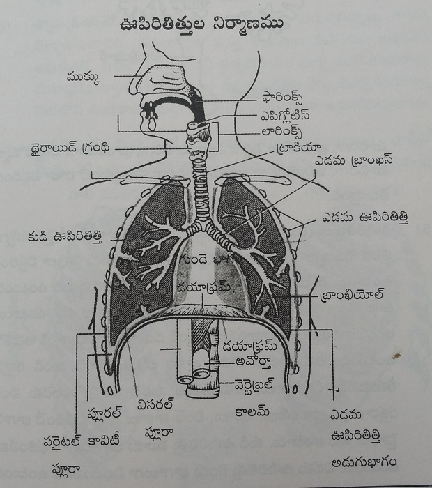
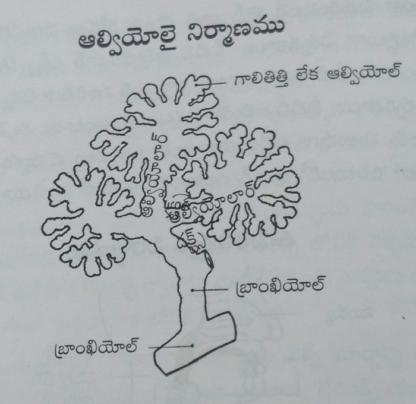
5.Lungs (Lungs):Lungs are conical in shape with narrow ends at the top and wide spread botton in the chest on either sides of heart.Ribs cover the lungs anteriorly and laterally. The lower part of lung is like a half moon on the top of diaphragm. The blood vessels that supply heart and lungs, bronchi, nerves and lymph nodes enter through hilum Right lung has 3 lobes, left lung has 2 lobes. On the outer portion of lungs has 2 serous layers called as parietal pleura, the space between both layers of pleura is called as pleural space , filled with thin serous fluid called as pleural fluid . It prevents friction due to movement of lungs during respiration.
6.Muscles that help in respiration:Some muscles help lungs in taking in air and leaving air. Most important are intercoastal muscles and diapragm. In case of difficulty in respirating we use muscles of neck, shoulders and abdomen.
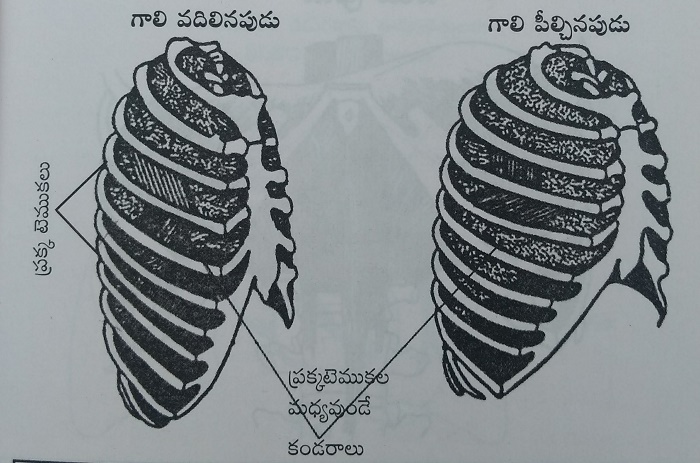
ఎ. Intercoastal muscles (Intercostal muscles): There are 12 pairs of ribs connecting them with each other are 11 pairs of muscles. They are called intercoastal muscles.When these muscles are contracted they pull ribs and relaxes the chest and expands it.
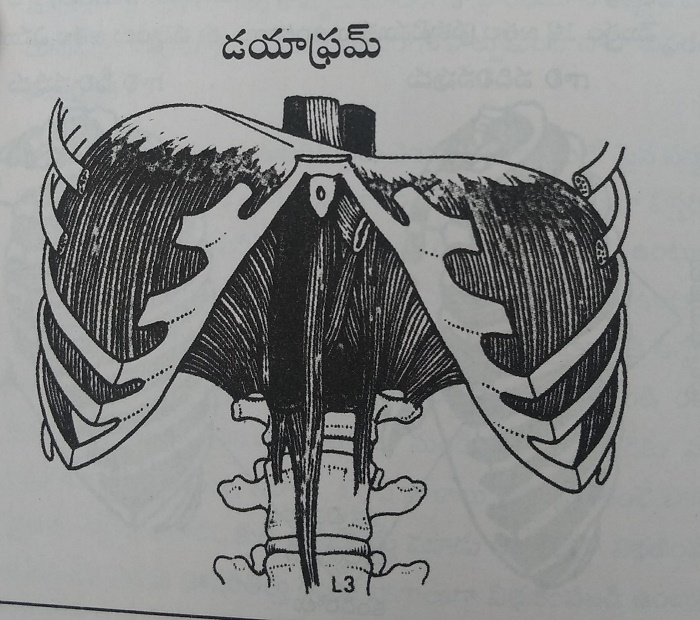
B. Diaphragm (Diaphragm): It is like a roof seperating abdominal and chest organs from each other. It is attached to ribs on the side with sternum anteriorly and vertebral column posteriorly.It is pulled down when muscles get contracted and this leads to expansion of chest cavity. It comes to its original position when muscles gets relaxed. This plays an important role in respiration. Intercoastal muscles also contract and relax along with it.
Blood supply to lungs: Pulmonary trunk that brings deoxygenated blood to lungs divides into right and left branches and enters lung on that side. It divides into small branches called bronchi, bronchioles and reach alveoli. There walls are one cell thick and very thin for air to easily pass through.The gaseous exchange occur here between lungs and blood.
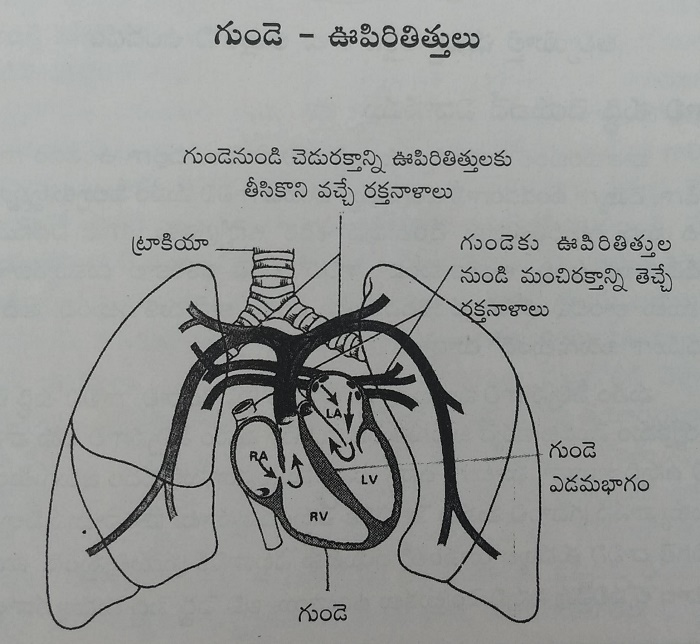
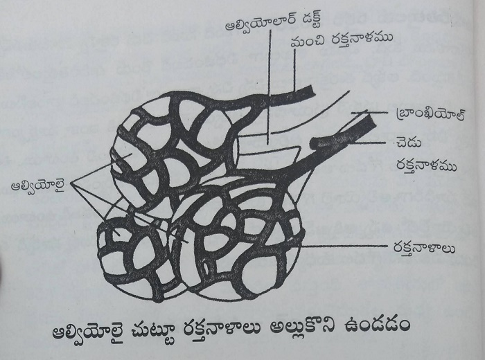
Procedure of purification by air
Based on the environment the air we breathe can be dry or moist, cool or warm. The air we breathe is brought to body temperature before reaching lungs.It also protects our body from dust, microorganisms, lets understand now how this happens.
The air we breathe enters our body through nose. First process of purification starts here. If the air we breathe has bad smell or hard smell we tend to close our nose. Our nose senses the smell and alerts us. If we smell it by mistake it removes by sneezing. Our nose has thin hair on the inner side, they prevent the entry of big dust particles. The mucous layer produces 1 litre of mucous everyday. These mucous layer has invisible hair on it they are called CiliaThe cilia sweeps away the bacteria, viruses, dust particles stuck on the mucous layer. Cilia does this 10 times in 1 second. The mucous layer is replaced in every 20 minutes just as we replace our sheets. This waste enters our stomach slowly, the acid in the stomach kills the bacteria. When we breathe very cool air cilia won't function properly that is the reason why more mucous gets accumulated . As the cilia lacks the capability to push it effectively, it come out in the form of running nose. There are spaces inside the nose that creates heat and warms our air. When we breathe cool air this portion swells to retain more heat. The air which is heated and purified enters the trachea. If any dust particles enters the throat escaping our nose it is removed by coughing. Even our throat has mucous layer and cilia just like our nose.They remove all the wastes and push them into our stomach.The mucous produced on the back of nose and throat is removed through mouth.The air from throat reaches lungs through larynx our air gets completely purified there. The inner lining of bronchi has very thick mucous layer, this further removes any microorganisms present. Cilia here are more in number almost in crores. They clean the mucous and dust particles in the bronchi towards throat. In smokers these cilia are very low in number, that is the reason why the mucous gets accumulated in their lungs damaging its cells. That is how the air gets cleaned till it reach alveoli.
Volume of air in lungs
A pair of lungs has the capacity to fill 4Litres of air. We breathe 300-500ml of air in each respiration. The maximum amount of air that can be filled in lungs is 1500ml per respiration. All the air we take in respiration doesn't reach alveoli, some amount is left in the blood vessels. It constitutes about 140ml. A healthy man breathes 16-18times per minute and takes in 18litres of air. During expiration all the air in alveoli doesn't come back. 1000-1500ML is left back. All the air we breathe in is not used in oxygenation. Only the air present in the alveoli does this. Deep breathing increases the amount of air that reaches alveoli.
3.Purification of blood by respiratory activity
- Respiration is the duty of lungs- Cells utilize this air
- Respiration is a continuous process - It is an important procedure that cleans our blood
- Purification of blood in the alveoli - Adequate supply of oxygen
- Respiration inside the cells - Procedure that provides energy
Respiration occurs in two phases
1. Respiration within lungs (External Respiration): The air from outside enters the lungs and air within our lungs moves out.
2. Cellular respiration (Internal Respiration): Oxygen that reaches to our tissues by blood is utilized and carbondioxide is released by expiration.
Now let us understand the process of expiration. Our lungs tends to relax to take in air and contracts to expell.
The intercoastal muscles and diaphragm relaxes expanding the thoracic cavity, this decreases the pressure within the lungs lesser than the atmospheric pressure. Contraction of lungs also reduces the intrathoracic pressure. Air always travel from area of high pressure to low pressure, so air enters the lungs. The intercoastal and diaphragm contracts reducing the thoracic capacity. Lungs come back to its original position, this increases the intra thoracic pressure and the pleural cavity pressure and pushes the air outside, this cycle repeats.
Purification of blood in lungs: The air we breathe reaches alveoli, veins carry deoxygenated blood with more amount of carbondioxide. This blood vessels divide into small branches surrounding the alveoli. The air inside the alveoli exchanges with the carbondioxide present in the vessels. Lets understand how this procedure occurs.
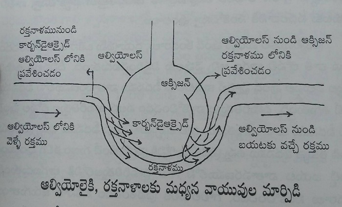
The air we breathe has 21% of oxygen and 0.04% of carbondioxide and 79% of nitrogen and some amounts of moisture in it. They add some pressure to the walls of alveoli. The pressure caused by every single breathe on the alvroli is called as partial pressure. The partial pressure of oxygen in the alveoli should be greater than the partial pressure of oxygen in the deoxygenated blood. This helps in the movement of air from alveoli into blood vessels. The partial pressure of carbondioxide should be greater in deoxygenated blood than in alveoli. This helps in movement of carbondioxide from the blood vessels to alveoli. As nitrogen is not exchanged in the body, it has same partial pressure everywhere. As blood flow here is slow there is good chance of exchange of gases and oxygen reaching RBC. This cleans our body, this purified blood moves to heart through pulmonary artery, heart distributes the blood to every cell of our body.
Cellular respiration: Till now we understood the method how oxygen reaches blood. Let us now understand how the oxygen reaches the tissues from blood and carbondioxide produced as a metabolic waste into the blood.
The oxygen in the blood combines with haemoglobin and forms oxyhaemoglobin and reaches the tissues. The blood vessels which carry oxygen to cells are usually thin. Gaseous exchange occurs between the endothelium of blood vessels and tissues.As the concentration of oxygen is more in the blood and less in tissues, oxygen moves from blood into the tissues. On the otherhand the oxygen concentration of carbondioxide is more in the tissues than in the blood, so it moves into the blood.This carbondioxide reaches lungs and gets expelled.So, our body supplies oxygen to cells and releases co2 by respiration.
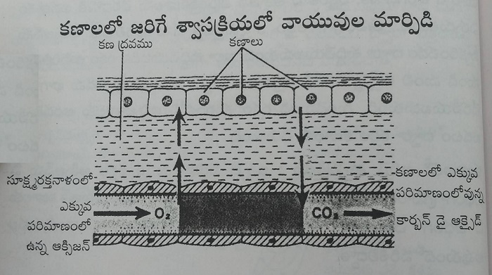
4.Importance of deep breathing
- You need to breathe air to the full capacity of lungs - This is the correct route of respiration
- Abdominal movements - For perfect respiration
- Improvement of deep breathing - Cleans your blood
- Take in deep breaths- Understand the difference
- Use the air efficiently - Its beneficial with deep breathing
- Breathing controls your thought process - It protects your health
- Do physical work - Breathe in fresh air
- Getting exhausted with minor work - Reason is lack of air
- Pranayama is inbuilt in the cultures - Wonderful gift given to us by our ancestors
- Decreases in respiratory rate cleans your body - It improves you mentally and drives you to divinity
We humans are not bothered about taking in sufficient amount of water and food in sufficient amounts on time, these are things we can have control on. We are neither bothered about our breathing which is involuntary. Many people are not aware of what deep breathing is and its importance. Lets now learn the difference between normal breathing and deep breathing and understand its importance.
What does normal breathing mean: Lets understand what happens when we breathe the way we are breathing right now.We usually breathe more than 18 times and take in 300 to 400 ml per min. Our lungs are designed to take 500 to 600 ml per min. If we take only 300 ml of air it doesn't reach the bottom of alveoli.This inturn fills the chest cavity and moves the chest above. It indicates insufficient filling of lungs. The air doesn't reach the bottom of the alveoli, so we can't see any movement in the lower part in them, this is called as normal breathing. You can clearly appreciate the movements of chest in them due to rapid and shallow breathing. This people have a lifetime of 60 to 80 years. They lack energy and feel exhausted all the time.
What does deep breathing means: In deep breathing people has respiratory rate less than 15 per min. They can take in 500 to 600 ml per minute. Normally our lungs can take in the air what they are designed for, as 500 ml has moe pressure it reaches the bottom of alveoli.Indication to this kind of breathing is movement of abdomen up and down. Infants have this kind of respiratory activity. People in whom abdomen moves while breathing chest doesn't move. Respiratory rate in them is only 10 to 15 times so the duration of each respiratory activity is longer than usual. They breathe slowly more amounts of air and it reaches every corner of our lungs. The air moves up and down instead of getting stored in the lungs and we can't see chest movements in them. This is the correct way of respiration. In deep breathing, the activity is so slow that we don't even recognise the air movements. It is an involuntary action. Our life time increases to 100 to 200 years , if we have this kind of respiratory activities. We have energy that never makes us exhausted even after working for 20 continuous hours.
We may get a doubt here, people with deep breathing breathe for 10 to 15 times for long duration, people who breathe 20 to 25 times do it for short duration, what makes the difference? Its important to send in air and it is happening in both the cases , what difference with the method of doing it. Some may be in the thought that our body is anyhow taking the air it needs why worry about this too much, you may be thinking whats the difference. Lets understand whether there is any difference or not. If yes what is it.
The air we breathe in travels through the respiratory chambers in the lungs and purifies the blood and reaches alveoli.This air that reaches alveoli purifies the blood.Alveoli mostly lie in the terminal portion of the lungs. If the air we breathe stays in the lungs it not beneficial. What is the use of the food that is kept somewhere else when we are hungry we need it in the stomach. In the same manner it is important whether the air we breathe is used in purification or not , it doesn't matter about how much amount is stored in the respiratory cavities. Among the air we breathe in some amount of air is always stored in the respiratory channel, this happens everytime we breathe. We usually built an overhead tank in our home and use pipes to bring water down. In order the water reach us its important it enters the pipes first. Even though we use more amounts of water , some amounts of water is always stored in pipes. In the same manner our respiratory channels have 140 ml of stored air all the time. Whenever we breathe 140 ml remains in the channels and remaining reaches the blood for purification. Now you can understand the difference the volume of air that actually reaches lungs in people with normal respiration and deep breathers.
People with normal breathing: They breathe 20 times per min and take in 300 ml per each breathe. This implies that 6000 ml of air reaches lungs. The air that remains unused in the lungs is 140ml , it means for every breathing only 300 -140 = 160 ml of air reaches the alveoli. In one min 160 x 20 =3200 ml of air reaches the alveoli for purifying blood.
People with deep breathing: They breath 10 times per min and take 600 ml of air every minute. If 140 ml of blood is left unused per 1 breath 600 -140 = 460 ml reaches alveoli. In 1 min 140 mlx 10 =1400 ml is left unused, it means 6000-1400 =4600 ml of air reaches the lung every minute for the process of purification.
The amount of air both people with normal respiration and deep breathing take per minute is same , 6 litres.But difference is the amount of blood that reaches alveoli for purification.The difference is almost 1400 ml per min, it means 84 litres per hour, 2016 litres per 24 hours. That is the difference between people with normal respiration and deep breathers. See how huge it is.
The amount of air taken in by a person who does no work just sitting at home is 6litres per min and 8640 litres per single day.If they do physical work they take in more amounts of air. Even though you take deep breaths or a normal breather you take in same amounts of air. In people with normal breathing 4608 litres is only used for purification.But people with deep breathing uses 6624 litres of air for purification of blood. The difference in the amount in them is 2016 litres,This is the explanation for the above difference. We all are taking in same amount of air but it is not used equally in all for purification. Only people with deep breathing are getting benefitted. Its compulsory for everyone to take in6 litres of air, some take it in 10 times and remaining in 20 times per min and few take it 25 times. It depends on our physical work, dietary habits, thoughts and health conditions. Usage of oxygen also depends on the number of times we breathe. In the same manner our health, energy, thoughts and lifetime depends on our breathing. Our body is mainly dependant on oxygen for its activities. So if you wanna care your life , then take in deep breaths.
People with normal respiration may think we are healthy now whats wrong with us. People consuming starch water and pickle also move around for work and people consuming healthy food also do so, but there is a difference between their health right. We only know what we have and feel great about it. Its not upto the knowledge of normal people how deep breathing helps them. They feel like why should we do this, they don't consider it in depth and understand its use. We are almost 2000 litre deficient in oxygen everyday. Just assume how great will our health be after we recover that 2000 litres of oxygen too. The oxygen deficiency is affecting us both physically and mentally. The best solution to this is deep breathing.
Some people even in this generation are consuming only rice, starch water and butter milk everyday, they don't contain any nutritive material. The people consuming this kind of food do heavy physical work for 15 continuous hours efficiently. They appear so energetic. We consume healthy food like leafy vegetables, fruit, pulses, juices , milk and curd etc, we eat more number of times than they do. But we can't work for 5 to 6 hours continuosly. These days everyone are like this. We take rest to overcome the fatigue, pains etc. There is only one main reason between them and us to explain the difference, that is they work in environment with free oxygen flow and they do physical work. This streches the alveoli and fills air. If you tend to work daily you will breathe deeply.For example drawing water from wells, doing farm works, labour work, washing and weight lifting etc fill the lungs with air. They take in more amounts of air with less breathing. They breath almost 10 to 15 litres of air everyday. 8 to 10 litres of air cleans our blood every minute. As lot of air reaches the cells 70% of their energy needs are supplied by this. They stay active even without water and food. They provide a lot of air to their entire body for several hours. They depend on food and water for 30% of energy needs.Our grandmothers are active even today , we can't even compete with them in our youth, all this is because of respiratory activity. As they are habituated to deep breathing they tend to do so even when they are in resting state. It remains so for few months and even years without working,if the resting state is for long durations there deep breathing change into normal breathing.
These days people are mentally strained these days not physically. They don't even sweat, even work is done in seconds with minor involvement.If you ask them about the work they do the whole day, just an hour of walk. People feel it as hardwork.They stay indoors and take in air that they left out. As they work using their mental abilities they feel tired, angry, depression, anxiousness along with these their addictions and artificial foods.There lungs may not even cooperate to breathe 6 litres of air. 90% people have only shallow breathing with 20 to 25 breaths per min. The amount of oxygen that reach our body is less with increased respiratory rate. This reduces the oxygen supply to body parts and damages our body. People are getting exhausted even with minor effort due to oxygen deficiency. We are aware that food and medicine are not helping to make us active.In these the diseases most employees , businessmen and people with sedentary lifestyle get is due to oxygen deficiency.
In previous days the saints and scholars who don't do alot of physical work used to do pranayama and asaanas to compensate.Normal people have pranayama in only few things like blowing a firewood stove. If you do this blowing for 10 to 20 times everyday there is no special need of doing pranayama. When the firewood stove is put off in between people should take deep breaths to blow them. If the stove is put entire kitchen used to fill with smoke, they used to stop there breathing it works as kumbaka pranayama. They combined pranayama with evening namaskaram. Along with it they asked
to do OmkaramWe get the effect of deep breathing by spelling the word. If you chant the gayathri manthra without break you will experience deep breathing. You experience the effect of pranayama by chanting these mantras.They are healthy and active even without any physical strain by doing these activities.People who do little work live for few days.People who work hard live long than them. People who do pranayama, yoga are ative than both of them.If you think the reason behind it is that , people who work little breath less air and people who work hard take more air and people
who do pranayama take more air than both of them and live much longer life than them all.By this we understood that increased oxygen supply helps you to live a healthy life. That is the reason why our saints, sages lived for 200 years they understood the reason behind it and used it accurately. They stayed soo active and healthy even at that age without consuming food for months, days and years is because they acquired life and health by pranayama.The people who live for 200 to 300 years have a respiratory rate of 4 or 5 , if there respiratory rate is less than that they dive in happiness their entire life.
We may not need those powers, such long life but we should lead a happy life right!What we are doing to lead a happy life.We are not doing physical work, not eating healthy food, not doing yoga, not having good thoughts. How can we be healthy without a single healthy habit.Why we will be at mental peace, why will we have a low respiratory rate and good health?We can find the answer for this within us. All the things we do are responsible for our problems. So, atleast from now on lets change our habits a little, lets change our thought process and try again.Lets start practising deep breathing atleast from now on, change in breathing habits changes our thoughts and habits eventually.Change in habits change our health, it makes us happy. Human life is happiness,we need to make it ours. Lets understand what are things to be done for us to be healthy.
It is difficult to do physical work all of a sudden.So, we need to do deep breathing to overcome the adverse effects. Even though we don't do much of a physical activity we can modify our breathing to 10 to 15 times per min. So, let us learn the procedure to do pranayama and try to prevent the damage caused by it and save 2016 litres of air we lost. Inorder to achieve this faster you should also eat good food along with deep pranayama. Lets learn in detail about deep breathing how it reduces respiratory rate. what kind of food we should eat to achieve this in next chapters. If you understand things clearly and work accordingly, it won't take much time to do so. We move forward by leaving behind all the laziness and doubts.
5. Relation between respiration and lifetime
- More the respiratory rate less is the lifetime - Its better when you control your respiration
- If you reduce your respiratory rate - You can increase your lifetime !
- Take in more amounts of air with few respirations - Everyone shoul practise this skill.
The lifetime of every organism depends on its respiratory rate. The organism with increased respiratory rate has less lifetime and low respiratory rate has more lifetime. Our elders say that god decides the number of breaths taken by us. If we use all the respirations very fast we reach him early, if we take time then we can stay here little longer.
In latest medicine, it is written that a normal human takes 16 to 18 breaths per min. Lets understand what will be a persons lifetime if he breaths 18times per min. For 1 min it is 18 times, it means 1080 for 1 hour and 25920 for a day. They call that human lifetime is 80 years if they take this number of breaths. As we know the normal age limit of human is 100 years , he should take only 15 breaths per min and 21600 breaths per day.
Science tells that humans can live happily for 100 years with a respiratory rate of 15 times per minute. At present the life expectancy of a average human being is 55 to 60 years. It means currently we are breathing at a rate of 20 to 22 times per min, 30240 breaths per one day.It means taking in 8640 more breaths than usual has reduced our life expectancy from 100 years to 55 to 60 years. Some people even breathe 25 to 28 times per min, they die even sooner.Lets understand the life expectancy of humans in relation with their respiratory rate.
| Living being | Respiratory rate | Lifetime | Dog | 28-30 | 14 years | Horse | 20-22 | 40 years | Humans | 15-16 | 100years | Snake | 7-8 | 150 years | Tortoise | 4-5 | 200 years |
|---|
Our saints practised deep breathing by pranayama and lived a long life for 200 to 300 years.Many ancient books mentioned that they used to breathe 5 to 6 times per min. Some people even live by taking 4 breaths per min. Respiration and heart activity has very close relation , for every respiration, heart beats 4 times it means1:4 ratio. If you reduce the respiratory rate , heart rate also decreases. According to our calculations, person with respiratory rate of 22 has a heart rate of 88 beats per min. It means more the heart rate less will be our lifetime.
As our lifetime depends on respiration, its better to take a few breaths. Taking in more air with few breaths not only increases our lifetime but also keeps us happy, healthy and at peace. Our life will be very happy.
pranyama helps a lot for attaining this.Bhramham garu's prediction told that human life span reduces from 55 to 16 in near future. Inorder to avoid those circumstances we humans should practise pranayama along with proper diet , he can sustain his life till the age of 100 easily.Lets try to practise these good habits atleast from now on.
6. Relation between respiration and diet
- Eat natural food - Lead a healthy life
- There is lot of energy in fruits and vegetables - It doesn't affect your digestive system even when you eat your stomach full
- Eat 60 % raw foods - Be 100 % healthy
- Boiled food may affect your breathing - Salt and oil may affect your respiration
- You may be craving for taste till you eat - It doesn't leave you at peace once you eat it.
- Eating stomach full - Increases load on the respiratory activity
- Change your food habits- Try to increase your lifetime
Respiratory rate depends on the type of food we eat.Food plays an imporatant role. Even without pranayama , you can take deep breaths 8 to 10 per min with proper food. If we take the food which is naturally meant for us we will be the most lucky ones and live as long as 150to 200 years. We humans are cooking it, frying adding masalas and oils and consuming it this is causing all the problems. Food is responsible for all the abnormality happening with us. This food is increasing our respiratory rate from 15 to16 to 20 to 25 per min. Lets understand the relation between food and respiration.
Natural foods: Lets understand what happens when you eat fruit, green leaves, sprouts and roots. As they contain lots of vitamins minerals and enzymes they are effeciently broken down into easily digestable form. The digestive activity needed here is only 50 % of the normal
These enzymes help in fast digestion.These foods contain more calories and oxygen so this is broken down in the intestines very fast. As this is lively more energy is not required for the digestion to occur. The major benefit with this foods is that they don't increase respiratory rate even after food consumption. We won't feel sleepy, exhausted or sleepy after eating natural foods, this is because the blood supply doesn't decrease due to food digestion and brain works effeciently even after food. This food may decrease the respiratory rate to less than 10. Sometimes im on this diet for 5 to 6 months continuosly, my respiratory rate used to be 6 many times after i do pranayama and normally at 8. When i ate 70% of raw foods my rate was 10 to 12 times per min.
Inorder to reduce of respiratory rates we should consume atleast 50 to 60% of raw foods, as it is important to both immune systems and health lets do this first. We will drink fruit juices in the morning with honey instead of tea , coffee, this forms10% of raw food. In the breakfast instead of upma, dosa, idli if we eat sprouts and seasonal fruits it forms 25% of raw food. Its better to take seasonal fruits 15 to 20 % availble in that season at 4 to 4 30 in the evening. You can observe the change in respiration after doing this.You can see the difference clearly.
Boiled foods: We human being got habituated to eat boiled foods all the time.This is the reason for increased respiratory rate and decreased life span. The respiratory rate when the person is hungry if 13 to 14 times per min, it is 20 -25 times after you fill your stomach with food. Lets try to understand why this happens.Cooking food is reducing the energy in it.The nutrient value of it is reduced due to cooking. As the food lost its natural lively nature our intestines should work hard to digest it. Our body uses most of the oxygen for the digestion of food. Since then our lungs work so hard to meet the respiratory demands of our body. If the food we ate contain fats and non vegetarian it gets very difficult to digest and we feel exhausted. The longer the food is present in the stomach, greater is the respiratory effort. We are supposed to take more breaths after eating food. We can feel our respiratory activity for few hours and this is unnatural.
Eating boiled food causes one more damage to the respiratory activity. It takes 2 to 4 hours for our stomach to get empty. We eat lot of oil and salt this makes us thirsty and we drink water during and after food this fills our stomach and makes it bulky. This prevents downward movement of diaphragm and its contractions and relaxations decreases. IF this occurs perfectly we can fill our lungs and empty them properly. Bulky stomach reduces the movement of diaphragm by almost 30 to 40%. This inturn increases the respiratory activity by 30 to 40 percent. The water we drink during food and 2 hours after food increases this problem.
What we get after eating is not satisfaction, it is exhaustion. The increased respiratory activity and feeling of heaviness is for 3 to 4 hours that to when we don't consume anything within this time.
After getting digested by the stomach and intestines , the food gets absorbed into our blood and converts into energy. This is the energy that we are using currently. Our food gets converted into energy in the presence of oxygen.It takes less oxygen to digest food particles. It takes more oxygen to digest fatty materials, nonvegetarian food, this further increases the load on lungs to supply oxygen to cells.It increases our respiratory rate. We use oils, ghee, eggs, meat and sweets etc in our food, they are responsible for increased respiratory rate.
Everyone add salt and oils to make the food tasty and eat, they feel it so happy till the time food is in our mouth . By the end of meal do they feel so satisfied and happy and light? Do anyone of you feel the same? We may feel heavy, burning sensation, dizzy,sleepy, lazy and exhausted but we never feel happy. The oxygen we take is mostly consumed by food we eat and oxygen reaches very little to our brain and cells. When the oxygen supply is not sufficient to the brain you may feel dizzy, irration and weakness etc. This tasty and boiled food affects our respiration instantly and makes us unhappy.But natural foods like fruits we feel they are tasty both while eating and after eating. We feel at ease even after we eat. The difference is What we experience after we ate.
If we have our breakfast by 8 in the morning we feel heavy till 10 or 11, if we don't eat any thing till lunch then our breathing becomes normal and we may feel active. If you have your lunch it may digest by 4 or 5 in the evening and you can have deep breathing till the time you have your dinner. Doing this will make you at ease atleast few hours a day. These days we humans are facing anxiety, irritation, fatigue, laziness and mental tension since the time we wake up. The reason for this is eating atleast something everytime without giving any break and filling it all the time. So we experience increased breathing all the time. These people lack mental balance from then.
As the food we eat is draining all the stored energy and oxygen input we all know that we do things post food on the day when we wish to stay active and healthy for long duration of time. People meditate only when their stomach is empty. They offer prayers and rituals without consuming food, they do so while playing , attending seminars etc. School people won't feel sleepy before lunch bell and after lunch atleast 50% of children feel sleepy at some point of time and few people stay focussed with thoughts somewhere else. The reason is the food we eat affecting our respiration.
We learnt the affect of food on respiration and the harmful effects of increased respiration. So inorder to be active for 24 hours stay foccussed we should maintain our respiratory rate at 15 times per min. If you can reduce them further you can be in meditative attention all the time.
You can they be able to work without anything disturbing it. Inorder to reduce our respiratory efforts we need to eat 50% of raw foods as mentioned before, you can consume boiled food in remaining 50%. When you use 50% of food without salt, oils, ghee it would reduce harm and keeps you away from diseases. Your respiratory rate decreases. Don't consume eggs and meat that has more fatty materials. Its better if you consume boiled food only in the afternoon.Its better to eat raw food the remaining. Its better to avoid water consumption 2 hrs before and after the food. When you eat with diet restriction you can have 10 to 12 breaths per min and you can remain happy, energetic and active.So, lets follow diet restrictions and maintain deep breaths to live a happy life.
7.Relation between respiration and soul
- Take deep breathing - Control your cravings
- You take deep breathing and reduced respiratory effort - That is the reason why we won't be anxious morning
- Don't loose your control by being angry - Don't increase your respiratory rate
- Your anger is your enemy - Controlling your breath is protective
- Your anger harms your body - who bares your anger is not at loss
- Control your breath - You can control your soul
There is close relation between respiration and soul. The relationship is like that between air and fire. With increase air increases the burn.Decreased breathing keeps you at peace and when air is in control fire also stays in control.In the same manner when your breath is in control your mind remains at control.You feel mentally happy when your respiratory rate is less than 15. When the respiratory rate is greater than 18 times we feel anxious, we tend to overthink and loose our cool. We feel happy when our respiratory rate is low. In the same manner when respiratory rate is more you feel anxious. That is the relation between our soul and respiration.
That is the reason why our sages told you can control your breath inorder to control your soul.Gautham buddha was aware about this so he introduced this meditative procedure. If we are aware about inspiration and expiratory activities we are mentally unstable at that time.When inspiration and expiration are not incontrol of ours our soul is in pefect mode. Our soul listens our word as we say, inorder to attain this we need to control our respiration. Some people leave the surrounding environment 5 to 15 min of meditation.There respiratory effort is very slow and we can't listen them.At that time our respiration is very slow. People with good diet and who meditate maintain respiration at 8 to 10 times per min. We won't feel like coming out of it. Inorder to control the fierce bull we need to tie it but inorder to control our monkey like soul we need to control its respiration. The day we had less respiratory rate we feel at ease. When our respiratory effort increases we feel weakness, lazy and dizzyness etc without your knowledge.
Since we wake up in the morning before breakfast we feel happy and at peace and later we become anxious. We usually don't quarrel in the morning or not at all in the mornings. Even though when people start a fight they break it by saying why should we fight early in the morning. People won't be interested in fights usually in the morning.Do you know the reason behind these changes in the morning? Do you knew why few people fight in the morning?The main reason behind this is reduced respiratory rate. After our dinner at night the food gets digested by 2 to 3 in the morning since then our body takes a minimum of 7 to 8 respirations to maximum of 12 to 13. This is the only time when our respiratory rate is very slow, this is also the reason why we feel calm early in the morning. Since our breakfast our respiratory rate remains high at 18 all through the day. Our soul runs without listening to us.
As our ancestors are aware about all this they used to fast inorder to control their soul. They used to do this during festivals, marriages and any occasion and use to control their respiration and soul.They used to get more happiness during that period. When you think about the secrets of fasting your respiration will remain in control without our knowledge. Till now we understood how does respiration affects our thinking, now we will learn how thinking affects respiration.
When our mind is calm our respiratory activity is also slow. Since the start of mental disturbances respiratory rate also changes. Our respiratory activity changes when we are angry, when we fight and when we get scared.We can see our chest moving. Our respiratory rate increases to 25 - 30 times per min. We can understand that the person is agitated when we see their chest moving. The agitated state releases adrenaline hormone into the blood. They cause contraction of muscles of heart. The heart beats at a faster rate, this inturn increases the respiratory rate. If our heart rate increases to 100 beats per min then respiratory rate increases to 25 breaths per min. If the fear or anger is more then the heart may increase upto 150 to 200 beats per min, which inturn increasing the respiratory rate to 40 to 50 per min. If you get angry atleast once the effect of hormone in the blood is seen for long time affecting heart rate and respiratory rate completely. That is the reason why our elders say our anger is our enemy. Our anger effects our respiratory system mainly. If respiratory rate decreases our anger also decreases automatically. Man in anger says i'm not a human when i get anger. Human turns into an animal when he is angry.Our tensions and anger increased our respiratory rate to a greater extent.If we don't bother about what other people say we can work better, if we bother much we are the once at loss. How can we not bother when someone say something?We feel like how can they something like that to me. The answer to this said by gautham buddha is very interesting.
Some narcisists came to buddha to scold him that he is converting everyone to monks. He doesn't responds to what they and hears them all. They get irked and say we are shouting at you and you seem like not being affected by it. Are you human? Then buddha answers them by saying " when a guest comes to my door he comes in if i allow him otherwise he leaves the place, in the same manner i didn't welcome your scolds so they return back to you. I'm not bothered'. they left the place by listening his answer. We develop when we don't bother other peoples words. The people who cursed gets hurt mentally. We get hurt when we care about what they say. Our thoughts affect our respiratory activity. I learnt a very good procedure i will discuss that with you.Whatever you say belongs to you, whatever you hear belongs to you, what ever you see belongs to you. So, in the same manner the above 3 things belongs to who told them, whatever the other person it effects him . Sop, if we can resist our selves from anger we can gain respiratory control.
Our respiratory activity changes when we are hurt.Improper respiration also changes our mood. We are healthy only when we are good physically and mentally. Milk don't flow out when we reduce the flame of the stove, in the same manner our mind also doesn't affected when we reduce our respiratory activity. Preventing milk overflow without reducing the flame is more difficult just like claming down your mind without reducing your respiratory activity. Pouring water on the milk to prevent overflow from the container is just temporary.Pulling away your racing heart is also temporary. Its impossible to control your heart this way. Inorder to control your heart you need to control your respiration first.Its easy, right way and gives you good results.
8. How does gaining weight affect respiration
- Overweight- leads to oxygen deficiency
- Overweight increases respiratory rate - Increased respiration reduces your heart rate
- Obese people tend to snore while sleeping - Due to reduced oxygen supply
Everyone suggest that we should weigh according to our height and weight. This makes your respiration on check. If your weight increases abnormally then your respiration also increases abnormally. Since the day of increased respiration the person develops all kind of deficiencies. That is the reason why obese people can't do things actively, they get tired eaily. They get exhausted easily and they have less lifespan. The reason for all these changes is increased respiration and decreased oxygen supply. Lets understand the changes in respiration in obese people.
If a person weighs 10 kgs more than his expected weight, there are many cells in that increased musculature. Inorder to supply blood to them we need vasculature. For every 1 kg increase in weight we need 3000 km long blood vessels to supply it. It means for a 10 kg increase in weight we need 30000 km long blood vessels. We need additional nutrition to feed them.The most important thing to the cells is oxygen. But the lungs of the patient are same before and after gaining weight. If the lung also increases in weight there won't be any problem but this doesn't seem to happen. The blood also doesn't increase it remains same before and after gaining weight. The red blood cells are responsible for supplying oxygen to the cells, they won't increase in number due to increased weight. All these don't change but nutrition gets increased and our body is supposed to do this. Its like increased expenditure with the income being same all the time.
When a dog gives birth to 2 kids the breast milk are sufficient to feed the kids, but when it had 6 kids the milk won't be sufficient 2 or 3 kids die and remaining stay weak. In the same manner increased cells but with same lung capacity, the cells need to share what all oxygen presence. Inorder to compensate the deficiency our lungs work more.This increases the respiratory rate, If your respiratory rate is 16 normally it becomes 23 to 24 once you put on weight. Increased weight decreases the lifespan , people with increased weight tend to die early. Its very rare that people with more weight living till the age of 100 to 110 years. People who are lean can live longer, they get sufficient amount of oxygen and had increased life span. People who are obese die early due to reduced oxygen supply.
People who are obese don't get sufficient oxygen to their cells reducing the energy produced, they get exhausted easily. They can't do heavy work or climb heights as it needs more amounts of oxygen and they get very little.They experience trouble doing these activities. People who are lean get sufficient amount of oxygen and do work efficiently.
Obese people tend to snore due to improper oxygenation. The air they breathe by using two nostrils is insufficient, so they open their mouth to breathe which makes them snore.
Along with increased weight if their dietary habits are improper or they eat lot of sweets or smoke the no of breaths increase even more.
Obese people are lazy, they sleep more and are always in bad mood , lack mental peace etc this is due to reduced oxygen levels.
"Loan is never your wealth and oedema is never healthy "our elders didn't say it just like that. As our increased respiration reduces our lifespan, its better we control our weight. Deep breathing helps in reducing weight and taking breaths effectively. Obese people can do pranayama twice a day inorder to overcome oxygen deficiency. No other procedure is as good as this is. Only deep breathing is the solution. We need to understand this and act accordingly.
9.Relation between stomach and our respiration
- Belly fat doesn't protect you - Its a punishment to your health
- When your abdomen is spacious - There is no problem in respiration
- Increase in belly size - Is not beneficial
- Full stomach - You can't take in air efficiently
Some people think it is important to have belly fat inorder to look beautiful, they call it unhealthy if they have a very flat stomach. As the days are changing so our thoughts. People with belly fat are fewer before marriage. We see that mostly after marriage. Newly wedded people tend to eat more in the name of taking care, giving company by talking ,they increase their weight by this. When people around comment that you are looking great post marriage you tend to continue it, we are not bothered about it untill it affect us.
Healthy people should have broad chest and narrow belly. Our waist should be 8 to 10 inches smaller than our chest. This helps in proper respiration. But our bad luck is that our waist is 8 to 10 inch bigger than our chest. We can tell it as na average, we are resembling frogs who have a lot of belly fat. Our ancestors used to say that when you place a scale on your chest by compressing it towards your belly button, it should enter into it. Flat stomach is an indication of complete health.We completely forgot the saying that make your heart bigger and belly smaller. There is a close relation betweeen flat stomach and respiration. With increase in belly fat , respiratory rate increases. Lets understand the relation between increased belly fat and respiration
Its is called perfect breathing when we can breathe the air filling both our lungs till the bottom. If our respiration is like this we have decreased rate otherwise the rate keeps on increasing. We can observe this from the outside. If w are taking in air perfectly lower part of our chest moves up and down.This is called as a perfect type of respiration. Infants who are breast fed have this type of respiratory activity, we can observe this even in dogs.
This is the symbol of perfect respiration, if our chest only moves it means only 2/3 rd portion is filled and 1/3 rd is left empty. These people have a higher respiratory rate. The reason why lower portion doesn't move is belly size and food in the stomach.
Increased belly size: Diaphragm is the muscle that helps in respiratory movements. We breath air when diaphragms moves down and expell air when it moves up. Diaphragm plays a vital role in our respiration. If our diaphragm is active we can take in sufficient amount of air. Without belly fat the contraction and relaxations of diaphragm are better. Changes in respiration is seen once people start gaining weight and putting on belly fat. If our belly is half or one inch thick it means we are healthy, but now even one hand is not enough to hold it we are using 2 hands to do so.For some people you can't even catch it, its because of the fat that gets accumulated.Increased belly fat and size prevents movement of diaphragm and causes load on it. It prevents its contraction and filling of lungs. We get less air as a result of this.This is filling only 2 parts with air. Since then our chest starts moving with respiration.This inturn increases respiratory rate.More the increase in belly fat and size more the chest cavity gets closed.
Presence of food in the stomach: The ends of our lungs are on either sides of our stomach.When our stomach is empty lungs gets filled with air completely.When we see our abdomen when we are hungry or early in the morning they move up and down.After food our chest moves up and down. If you think about the reason for it,it is because we ate our stomach full this prevents downward movements of diaphragm. We take in less air because of this. Till the time food is in our stomach the diaphragm undergoes only 60 to 70% of contractions and relaxations and we have reduced breathing.That is the reason we feel sleepy and dizzy when we eat our stomach full. We can't take in sufficient oxygen as it compresses the bottom of lungs. If we do this everyday and never keep our stomach empty just like fuel in our vehicles. We should eat only after all the food in the stomach gets empty. As our stomach gets empty more air enters the lungs. If you feed continuosly we take only 60 to 70 % air for 20 hours a day. If you eat only 3 times a day we take in 60 to 70 % only for 10 hours and complete air for remaining 14 hours. Our ancestors say the less you eat the more you live.People who eat less get more oxygen supply and viceversa. Our lifespan depends on the oxygen input.If you wanna increase your lifespan increase the oxygen input first.
If we are able to breathe air properly we can live mentally and physically happy untill the end of our life. More the amount of oxygen more is the energy you get. You need to prevent things that obstruct oxygen input.If your belly starts getting bigger than your chest you need to focuss on stopping it.If you can't hold your belly between your 2 fingers it means you are getting sick. Never forget eating your stomach full and belly fat are dangerous.
10.Respiration while fasting
- Fastings during festivals - Being friendly with health
- Fasting keeps you at peace - Gives your lungs some rest
- Fast by consuming honey and water - Its a technique to gain energy without eating
- Lets provide some rest to our stomach - Preserve some oxygen
Providing rest to our stomach and intestines without eating anything is called as fasting. Our ancestors understood the importance of fasting so they tend to make it a part of their life.They used to feel mentally happy and physically energy by fasting.Fasting causes above mentioned benefits, but humans are lazy to do so they told they it will earn them blessings and linked it with god.They thought that we will be benefitted in both ways.They used to fast on everysaturday , on festivals, every 15 days, we lost them all now. We are getting harmed by stopping fasts in 2 ways.Its better to understand its importance and start doing it again.
We eat something 3 to 4 times a day. Inorder to digest these our body needs 3 things apart from the digestive juices that is oxygen, blood and energy.That is the reason why we take in more air post food.We feel lazy after food as all the energy and oxygen reaches our stomach. As the air we breathe normally is not enough, we tend to breathe more number of times. Fasting preserves the oxygen and energy usage. As our stomach lacks food when we are fasting it doesn't press our diaphragm and we can take in sufficient amount of air.This reduces respiratory rate.Fasting reduces respiratory rate for 24 hours it gets further low because we don't eat any food and oxygen gets preserved.As all these changes occur There is no other worship than fasting" Fasting is like worshiping god, you get mental peace , happiness by doing so.
Our respiration is never so deep except while fasting.You can't experience this ever.Lesser the respiratory rate more will be our peace. We need to be at peace and happy on good days so our ancestors asked us to fast during those days. We can fast whenever we need happiness and peace in life. The day you eat the most , you loose your peace. Lets start fasting atleast once a week inorder to maintain our respiration. We are blessed with human life to enjoy this immeasurable pleasure. The food we eat is making us unhappy. Lets be careful atleast one day that this food not let us down. As we are eating since our childhood lets understand how it will be if we stop eating once.
We get fatigue if we do work without eating any food , it is not called fasting when we consume fruit juices or fruits. We can fast by consuming something that doesn't bother our digestive system but provide us energy. We have honey that fulfill it. Honey can provide energy without undergoing digestion and helps us in reducing our breath.Lets learn how to fast once a week using honey.
1. You should consume 3 to 4 litres of water everymorning till 8 to 9 and see that we have 2 times of excretion.
2. You should avoid tea and coffee.You should stop taking them 10 to 20 days before fasting.
3. You should drink a big glass of water by squeezing one lemon in it along with honey.
4. You should drink 2 glasses of water at 10- 15 or 10 30
5. At 11 30 you should again drink lemon water with honey.
6. At 12 30 or 12 45 you should again drink lemon water.
7. You should drink water and lemon juice with honey since the time you wake up till 7 in the evening.
8. You can use 150-250 gms of honey per day
9. If you want to avoid lemon you can take in honey water.
10. You shouldn't consume prasadam, breakfast or anything else while fasting.
11. You can drink coconut water in emergency purposes
12.People who work outdoors while fasting should mix honey water before drinking, you should never store it or else you can eat honey alone.
Your body and mind won't get accustomed if you do it is twice or thrice. You can understand the damage caused by food we ate on the day of fasting. People take one day off after working for 6 days, in the same manner lets give our body one day rest.There is no need of any specific day.Its better you spent most of the day by meditating or reading books or without any unneccessary thoughts.You can restore your health and mental peace at the same time by doing so.Lets try to understand the importance of fasting from now on.
11.When and where should pranayama be done?
- You get more air in the early mornings - Increase your energy by doing pranyama
- Do pranyama twice a day - You will understand it better when your stomach is empty
- Do pranayama in good air - Gives your body sufficient levels of oxygen
Its very important at what place and at what time we do pranayama,its just like some auspicious occasion. If you do pranayama where ever you wish and at abnormal places you will be at loss.We need to know when to exactly do and where do to pranyama first.
When to do?: Our environment is pollution free early in the morning and we are also at peace during that time, so its better we do pranayama during that period between 4 to 6.The air during that period has more amounts of oxygen, it has a good vibe. As we all humans start waking up the vibe slowly disappears. Our science says its better to do pranayama during that period.During this period our both nostrils take in air and leave it out.At other times they won't function together, one takes in air the other leaves air, it lasts few hours and this alters later.We can observe the air movements by placing our finger below the nostrils.During early morning as both nostrils are functional its easy to perform pranyama.The same happens in the evening at 4 30 to 5 30, you can also do pranyama during this period.
We got habituated to watching tv late night and waking up late, so the precious time is gone. So, instead of compltely stopping pranayama its better you fix a time before 7 or8 and do it without any disturbance. We usually be getting calls, people come to see us so its important that we find a place to do without these distractions.Inorder to do pranayama you shouldn't be consuming any food including tea and coffee.Its better to do pranayama in the evening. Its important that our stomach and intestines are empty during that time.You can do pranayama starting at 4 30 to anytime till 7 pm. Its better you don't talk to anyone while doing pranayama.You need to be at peace.If you talk in between you may not experience that happiness and peace. You can do twice a day when its possible and once when you don't find time.
Where should we do?: Its better if you can do it in an open space, you can do the same even in cold weather.You won't feel any cold as your body gets heated in pranayama.If you live in colonies, you can do it on your terrace or even in your balcony when you don't get a chance.If you don't have it then you can do it in your bedroom opening your windows and doors and don't turn on the fan.You should never do it in kitchen and store room, you should do in a place where the ventilation is proper. You should sit so that you get more of a fresh air.
You should do pranayama early in the morning in a peace ful environment without any disturbances with proper air flow and do it everyday. Its very good if you can spend sometime in the evening too.
12.How should you get yourselves ready for pranayama?
- You need to clear your digestive system once you wake up - You should do pranayama only after that
- Whats the benefit of pranayama - It improves the effect of asanas
- Walking before pranayama - Improves your respiration
- You need to be doing vajrasana without any pain - You need to stay still in there
You need to finish your daily chores immediately as you wake up, you need to see that you have good excretion.If it doesn't happen your stomach will be heavy and you can't take in breaths effeciently. So you need to focus on this immediately after waking up.You need to start pranayama after that.
First dose of water: You need to urinate immediately after you wake up, some even get excretion done. Its better!If not you need to drink water after urination.People with cough, cold, acidity should drink in warm water, remaining people can drink normal water.Don't drink water from a refrigerator.Its better if you drink 1 to 1.5 litres of water in 5 to 6 min duration.More the water you more it benefits. This builds pressure on the stomach and helps in expelling the contents out. If you drink water slowly it doesn't increase pressure and you may not excrete.
First round of excretion: Drinking water as mentioned above causes movements in the nerves of the stomach, this inturn causes movements in the stomach.Increased pressure falls on to the abdomen and this pushes the faeces out.You should n't do any work any focus on your intestine and roam in your house, focussing helps in its movement and most of the waste gets ready to excretion.You should excrete only when you feel an urge to do so.It takes only less than 30 seconds to excrete contents effeciently.You can start any work after you are done with this.
You can brush your teeth. Wear close that are apt to pranayama and other physical work , they should be loose at the hips.You can do any physical work 20 to 25 min after you drink water.
Phyical excercise: People with sedentary lifestyle workout in the morning, they do wide variety of excercises but it never occured to them that they can try pranayama.
1. If you are habituated to do asanas its better you do it after you do pranayama.It benefits the asanas. Pranayama imprves the energy stores in our body and reduces the respiratory rate makes us peaceful.If you are making your body energetic by doing pranayama you will not feel exhausted while doing asanas.You can do it for long time and this thing benefits us a lot.If you are free of any kind of thoughts while doing asanas your body gets more energy to do them.That is the reason why you should pranayama first.
2.People who had a habit of doing morning walk should do that first and then start doing pranayama as it heatens up our body. Our blood vessels flow freely and the little nasal congestion seen early in the morning is also gone and we have clear nostrils for doing pranayama.
3. People Who do excercises like aerobics, jogging should do them first and then start pranayama as this improves the blood flow.
4.People who do suryanamaskaram should do them first and then do pranayama as this frees our lungs and we can do pranayama efficiently without any obstacles.
5. People who don't have any habit of excercise can start pranayama directly.
Things required:
1.While doing pranayama the mucous within the nose and throat comes out, you need to carry a handtowel to wipe them off without getting disturbed.
2. Some people have mucous in throat and lungs, they may not come out commonly but they tend to leave while doing pranayama.You shouldn't be getting up to spit you should do it without disturbing your vajrasan. People may get it 5 to 6 times you can carry a tissue
3.Its better to do pranayama while sitting in vajrasan. If you wanna do this longer sit on a soft surface, don't use sponge it makes you unstable.You can use a carpet or a bed sheet for this purpose. You can fold the bedsheet and place it under your knee bed to prevent pain.
You should finish your daily chores, heaten your body by doing excercise , carry all the things you need and sit for doing pranayama.
13.Importance of vajrasan
- It is precious as a diamond - It strengthens your spine
- It gives you so much happiness - It helps in pranayama
- Sit straight - Never bend
- You need to sit on a soft surface - It doesn't make you feel pain
- Good blood supply to feet - It increases once you get out of vajrasana
- Do vajrasan after your lunch - It improves your blood circulation
- If you are comfortable in doing vajrasan - You will stay at peace
It is named so because there is no other gem more precious than a diamond.

Inorder to do pranayama we are supposed to sit straight, if you sit in any way there is a slight bend in the back.This may press some portion of the lungs and obstructs air flow. Inorder to maintain proper filling of your lungs you need to sit straight. Your back tends to bend after a while when you sit in padmasan and sukasan. Inorder to prevent these obstacles you need to sit in vajrasan. Lets learn how to do it.
Method: When you sit in vajrasan your Anterior aspect leg from knee to feet should lie on the ground. This portion lacks muscle.You may feel pain when you do vajrasan on a hard surface.You need to take care that we sit in vajrasan in comfortable position for 20 to 30 min. You can use carpet, quilt for doing it effectively.
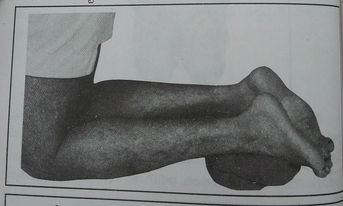
1. You need to stand on your knees with your legs touching the ground and place soft sheet below the knee.
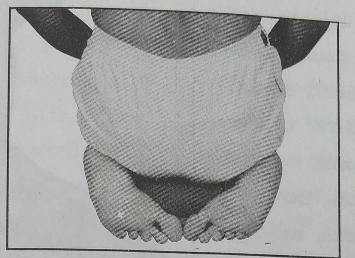
2. You should sit in a way that both the toes of your feet should meet and there should be sufficient gap between the heel.Your buttocks should rest on your heels.
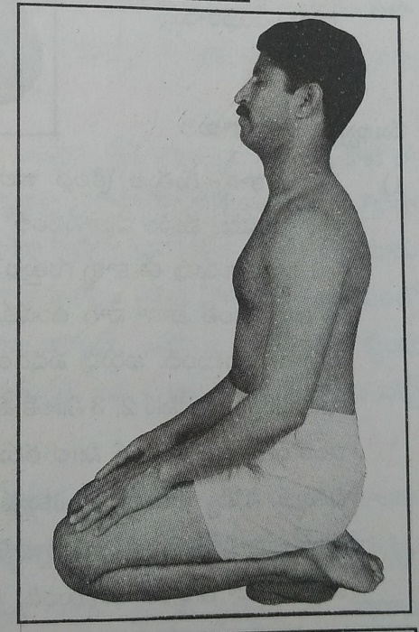
3. You need to place your palms on your thigh and sit with your back at 90 degree .
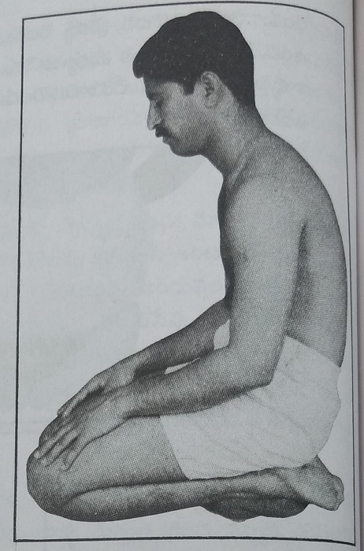
4.If you bent your back it is not called vajrasan.If you bend all the benfit is lost.If you sit bending as in the photograph it is not useful. Don't do it this way.
Important points :
1.Why should we place a sheet under our knee cap? When we sit in vajrasan our weight 60 to 70 kgs fall on our knee cap. AS our knee is not stretched before so it pains. As we are not used to increased weight and stretching we experience pain and get up in 3 minutes and few bare till 5 or 6 minutes. If you put a sheet below it you can hold that position longer.
2. People who don't have the habit of sitting in vajrasan before can't bear that position for soo long they develop pain and tingling sensation so they get up. You should gradually increase the duration of excercise.
3. People doing vajrasan bend their knee so the blood supply below knee gets cut down and person experience difficulty in 5 to 10 minutes. You can continue this and eventually it fades away and you feel numb.This blood moves to organs and parts above knee and reduces to feet.You can continue this till the end of pranayama even though your feet gets numb. If you can't really bear you can get down after a while.
4. When you can't stay in vajrasan for long time you can sit as shown in the photograph.As the pressure is released blood flow gushes to the feet.Your feet turn red within minutes.The blood circulation that was previously cut off gets double and comes back.This is the benefit of vajrasan.
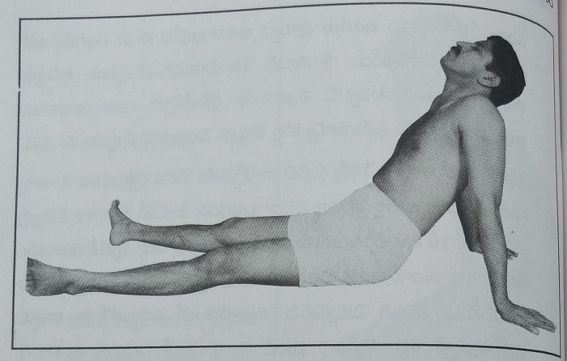
5. Doing vajrasan improves blood flow to the feet and heels and prevents numbness and pain.
6. You need to stretch your legs in the front after removing vajrasana inorder to restore blood flow, doing this only benefits our legs.
7.As our back is straight in vajrasan the nerve endings work fine during that period.Even blood supply during that posture is good, We stay at peace since the time we start doing vajrasan.
8. We usually suggest not doing any excercise after food but it is not the thing with vajrasan.It improves the digestion. This increases the blood flow to our stomach and fastens the digestion. When our back is in a straight line the weight of the stomach doesn't fall on the diaphragm. This doesn't affect breathing.If you vajrasan after lunch you won't feel exhausted.Its because we sit straight and the gases in the stomach and intestines are easily relieved.
9.You can do vajrasan while praying or while meditating or when you wanna sit freely.
10.People with knee pain shouldn't do vajrasan. If you get habituated you can rest in this posture for 1 hr to 1.5 hr. When you are not feeling well if you sit in vajrasan, by closing your eyes and focussing you will be relieved.Your thoughts also get diverted. You can do it at any time. You can read books and novels while sitting in vajrasan. If you can sit for long time you can complete the entire pranayama by doing so.Lets try and get habituated.
14. Types of deep breathing
- By doing abdominal brasthika - You need to move abdominal muscles
- Air should enter inside with pressure - It should completely fill the alveoli
- Close your mouth and nose tightly - Take in air completely
- Pull your abdomen inside while breathing air - Leave the air and wait for 2 , 3 seconds
- You need to pull abdomen inside while breathing - You should forget about it later
- Don't do it very fast - Don't forget to take a break
- Alveoli gets filled with air completely - It takes time to breath
- For cranial clearing you need to do kapalbathi - You need to expand your chest verymuch
- If you move your head properly - It will be useful
- Raise your head by taking in air - Bend your head while leaving air out
- Don't do it too fast - There should be atleast 3 to 4 second gap
- Never do kapalbathi by opening your eyes - Don't get tensed if you feel dizzy
- Sit straight - Bend your neck when needed
- The wastage which got loose in abdominal brasthika - Goes out in kapalbathi
- Rest after kapalbathi - Gives us peace
- Suryachandrula bedhi - Doing it one nostril
- Close your left nostril with finger - Take air with right nostril
- Its important to take in air efficiently - You shouldn't take in air very fast
- Do it untill you get tired - Close your eyes while dou
- Close your right nostril with finger - Take in air with left nostril
- When your nose gets blocked - Don't commit mistakes while fasting
- Mucous keeps on coming - If you stop in between it gets accumulated
- Breathe air with force - Sneeze it out easily
- Stick your tongue to the roof of your mouth - Close your mouth properly
- Inspire by lifting your head up- Leave the inspired air with left nostril
- Don't stop in between while breathing fast - Don't open your eyes immediately after deep breathing
- Use oxygen correctly - Coordination between nervous system and respiration
- Take in air slowly and leave - Breathe without any effort
- Close three parts of the nostril - Breathe in air with remaining one part
- Doing this exhausted filling - Use the energy efficiently
- Low respiratory rate - Exhaust filling has benefit
- Don't breathe air with sound - Don't breathe air by mouth
- Focus your mind on breathing - You will get grip on meditation
- Don't stop even when you get adverse reactions - Don't worry much about them
- Practise and enjoy results - Be complete with experience
- Learn the importance of oxygen - Take in more amounts of oxygen
- Lets do pranayama everyday - Live life healthy
There are 5 types of deep breathing, they are:
1.Abdominal brasthika
2.Kapalbathi
3.Suryachandrula bedhi
4.Brasthika pranayama
5.Exhaustion filling pranayama
We should do these 5 types of pranayama everyday.Lets understand in detail how to do each type of pranayama, its rules and benefits etc.
I.Abdominal brasthika : Brasthika means pouring high pressure air just like how a blacksmith does, we take in air and leave out a high speed that is why this is called brasthika.As we are doing this using abdominal muscles we are calling it abdominal brasthika.
Tips to follow
1.You should sit in vajrasan with your back straight,if you can't do so you can sit on a diwan by supporting your back t the wall. If you feel vajrasan is difficult you can sit in sukaasanam with back straight.
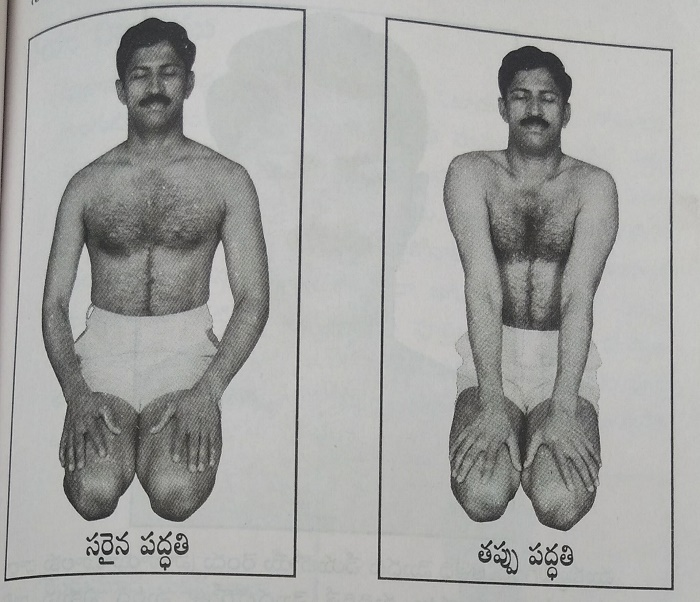
2.People who sit in vajrasan place their hands and chest freely not pressing each other as shown in the photo.This posture improves the contractions and relaxations of chest. Some people are not aware about this fact so they press their stomach and sit.Abdominal muscles, muscles of respiration doesn't contract and relax properly. Sitting as shown in the photograph is a wrong method.
3.Inorder to avoid the air we inhale and exhale entering back into mouth we need to press the middle portion of tongue to roof of the mouth and tip to the gums and close mouth.
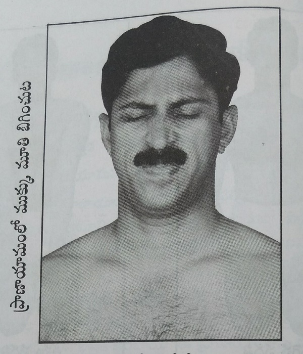
4.The air we breathe should enter the tips of lungs.It should come back from there. We need to breathe heavily and forcibly for air to reach their. Inorder to breathe air with such force its better to close mouth and nose. We press our mouth and nose inorder to remove the mucous while sneezing. You should close your mouth and nose as mentioned so that air goes in and comes out with pressure.Pressing mouth and nose is very important while doing pranayama.If we can do this we can take in more air and leave out more from the day 1. Some people feel shy and few think it may be wrong as noone ever taught us to do something like this. If you are not doing so only half the volume gets filled.If you put it so it fills completely and goes in with high pressure.It is important in deep pranayama, there is no other option to achieve this.
5. You need to close your eyes while doing pranayama
Method to do
1.You need to sit in vajrasan with above mentioned details.You need contract your abdominal muscles and take in more air through both nostrils all at once through closed nostrils, hold it for 2 to 3 seconds and release air by removing your hand so that all the air goes out at once.
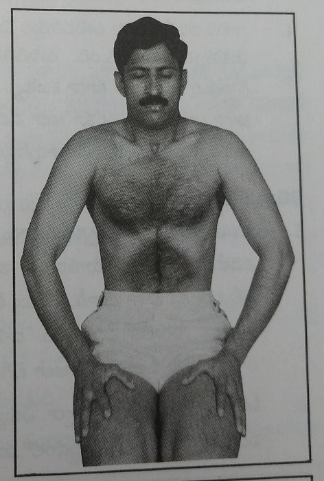
2. You need to repeat the same procedure everytime you do
Explanation
1. You should n't uncover your mouth and nose untill you are done with one cycle of respiration.
2. You should contract your abdominal muscles when you are taking in air. Don't bother about it later.It moves out automatically.
3. You should start next cycle once all the air taken in comes out, for it to occur you should take 2 to 3 seconds rest. This contraction of abdominal muscles benefits your diaphragm.
4.You can observe the emptying of lungs if you focus on it.Once the air in the lungs gets emptied, the air in the throat also comes out.You need to exhale that well. It is beneficial and leaves out carbondioxide effectively.
Mistakes we do unknowingly
1.Some people can take in more amount of air with sound and this doesn't happen when they leave out air.They press there mouth and nose while taking and releases it while expelling so that doesn't come out completely.You need leave out air the same way you breathe it in.
2.They take in air by compressing their mouth and this doesn't happen when releasing air so the air enters the mouth producing different sounds. You feel difficulty at your throat. You need to press your mouth and nose untill first type of pranayama.
3.Some people do the same even after we tell them not to take breathing fast. You should never do this in abdominal brasthika. This doesn't take inside the abdominal muscles and air doesn't get filled in completely. You should take a gap of 3 to 4 seconds interval.
4. Some people move their head up and down but you shouldn't do this in this case.
How many times should we do
You should take in air , leave and rest and do this cycle for 5 to 6 times a day and stop. Don't do this for 15 to 20 times initially this prevents neck movement. Its better you do less number of times untill you get habituated and increase the number once you get used to. You can stop once you feel fatigue.
Benefits
1. Contraction of abdominal muscles improves blood supply to stomach and intestines. Its like providing massage.
2. Digestive system improved.
3.Abdominal muscles that are used in respiration strengthens.
4.Diaphragm moves down completely when you pull in your stomach , it goes up completely when you release your stomach.It doesn't contract and relax more than this, so it strengthens the diaphragm to move up and down easily. This improves the volume of lungs.This is the most important benefit of abdominal brasthika. If you can't pull your stomach in you won't experience these benefits.
5.At the bottom of lungs all the mucous and waste materials are present.When you pull your stomach in it presses the bottom of lungs moving the mucous and waste materials outside. These waste materials also go out when you exhale.This removes the waste materials present everyday.
6.Alveoli are more in number in the bottom of lungs. Abdominal brasthika helps in filling these alveoli and successfully removing the bad air outside.If blood supply to alveoli is good it purifies blood perfectly.This pranayama uses the bottom of lungs the most. People who doesn't do deep breathing doesn't use this part of the lung.
7.You won't get tired even though you do pranayama for long duration, your heart rate doesn't rise. Your body heatens with respiration of 10 breaths.
8. In this pranayama our alveoli strecthes completely and relaxes completely this doesn't happen in any other pranayama.
9. Doing this pranayama for 10 times moves all the mucous in nose and sinuses outside and you can clean your nose later.
10. You won't have any kind of thoughts while doing this abdominal brasthika, you will feel at peace after doing this like you are not related to outside world anymore.
Note
1.You shouldn't stop pranayama inbetween inorder to wipe the mucous expelling during pranayama. You can wipe it after pranayma before closing your eyes.
2.You should be in a state of rest for 2 to 3 min after finishing abdominal brasthika.
3.When you are state of rest focus your mind on the upper portion of upper lip and below nose.
II.Kapalbathi: Kapalbathi removes all the wastes in the skull and forehead.Abdominal brasthika has some changes when compared to kapalbathi.Lets understand what are these differences.
Changes you need to observe
1. In abdominal brasthika we pushed the stomach inside but here we shouldn't concentrate much on the stomach.
2. We do the first pranayam without moving our head.In kapalbathi we move our head up and down. Noone mentions these movements in pranayamam, someone feels that it may be wrong.When we raise our head the chest portion closes. This makes in action all the intercoastal muscles, ribs,neck muscles and all which are involved in respiration.If you do kapalbathi by putting your head straight you mayn't experience these benefits and the air is also not getting filled. That is the reason of these changes. You may think that moving head in abdominal brasthika can help you but you can't move your stomach in when you raise your head. If you can't move your abdomen inside there is no real difference in both. That is the reason why you place your head straight.
3. You shouldn't be taking the 2 to 3 second break like in abdominal brasthika.
4. You feel exhausted after doing for sometime.
5. We used to remove the pressure on the mouth and nose after each cycle in previous exercise but here you shouldn't do that.
Procedure
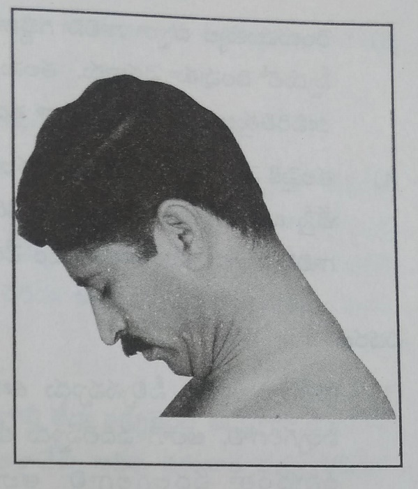
1.You should sit straight like in vajrasan press your tongue to the roof of the mouth and close your mouth, nose and eyesand expell air using two nostrils by bending down so that your chin touches your chest.You should do as it is shown in the photograph.
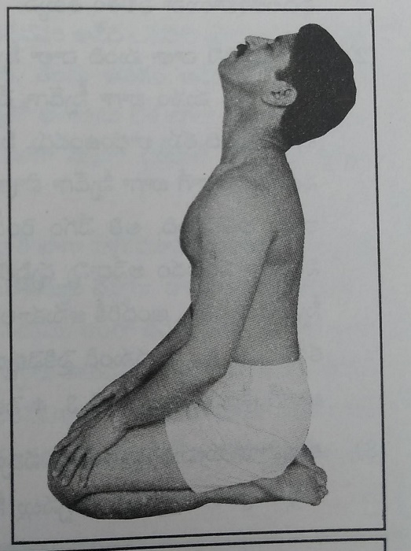
2. You should start breathing into both nostrils and raise your chin and you should finish taking in air by the time.You should lift your head as shown in the photograph.You should finish breathing in till your head is raised.
3.You should expell the air in the same speed you took it in by bending your head.You should expell all the air in the lungs by the time you bend your chest.
4. If you take in air by moving your head up and release the air by bending your chest down this completes one cycle.You should repeat this cycle.
Explanation
1.You should take in air everytime so that your lungs gets filled and you should empty your lungs completely while expelling.If you can't do so then there won't be much benefit.
2.Some people do kapalbathi at a great speed they think it is the matter of pride but it is not beneficial.When you try grinding at great speed it won't be done and when you slow down too it doesn't happen. In the same manner you shouldn't be doing kapalbathi at great speed or very slow.You should be focussing mainly on taking in enough and leaving out not on the speed.The speed that is comfortable for everyone is 3 to 4 seconds to move head up and and 3 to 4 seconds to move it down.
3. You will start it slow and increase your speed in between and eventually slow down and do 3 or 4 times slowly and stop.
4. You may feel dizzy when you start it sudden and do it speedly and end it suddenly.
5. Some people take in air at a great speed by using both the nostrils and leave out air fast, but this doesn't help the air to reach the bottoms of the lungs.
Mistakes you do unknowingly
1.You shouldn't open your eyes in betwen or immediately after the excercise because this can make you dizzy.
2.Taking in air and moving head should start at once and end at once. As we are not used to it we tend to make mistakes. If you are making mistakes make it slow don't speeden the process.
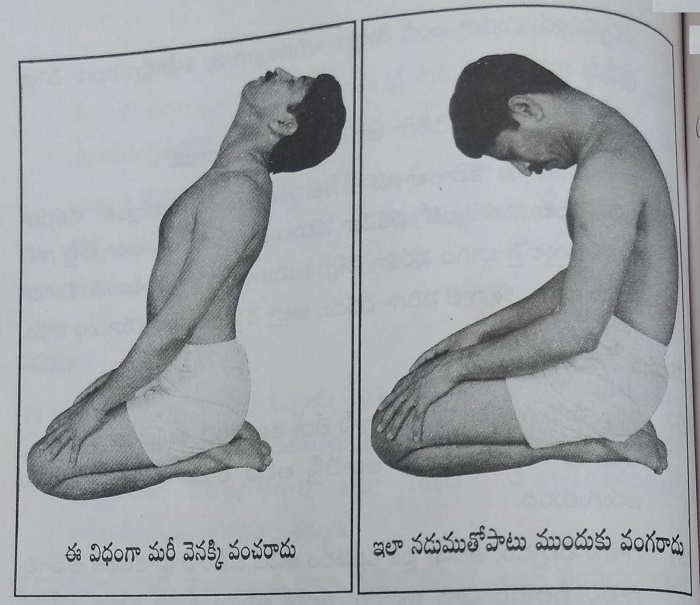
3. Moving head up and down stretches lungs more by listening this many people tend to over do this, but it is not beneficial. They pull their head and abdomen a lot, you may face pains by doing so but you won't be benefitted. Some even bend their back along with their waist. If you do in the way that is shown in the photograph it is absolutely wrong.
Benefits
1.The waste that has been moved out in the first pranayama goes out eventually in this one.
2. As we breathe in and out air more frequently the temperature inside the lungs increases evaporating any mucous inside.
3.You keep on getting energy as long as you do this pranayama, your brain gets more amounts of oxygen.
4. This pranayama removes any waste that gets accumulated in the mucous and the mucous itself.
5.Moving head up and down causes movements in the thyroid gland reducing its problems.
6.Moving head up and down causes movements in the respiratory muscles.
7.This removes all the infection that is present in forehead, sides of nose, jaws, sinuses and clears the mucous in these areas.In kapalbathi all these wastematerials expell out.
8. In abdominal brasthika all the waste materials that got free starts moving upwards and comes out once we start doing it fast.
9.It helps in curing chronic diseases of lungs like bronchitis, tuberculosis etc. It improves immunity in the lungs.
10.In kapalbathi more amounts of heat gets generated and our body remains warm as a volcano, it destroys all the waste materials in the body and cleans them.
Note
1. The kapalbathi , you should do 7 to 8 times initially for 5 to 6 days and then start doing till you feel exhausted if you are not experiencing any pain. You should do this by moving your head up and down and take in more air and leave outy. You should do this almost for 40 to 50 times.
2. People who did more number of times should slow down slowly and stop, you should close your eyes for 1 min and open only after a minute.
3.You shouldn't stop doing kapalbathi in between inorder to wipe out the mucous.
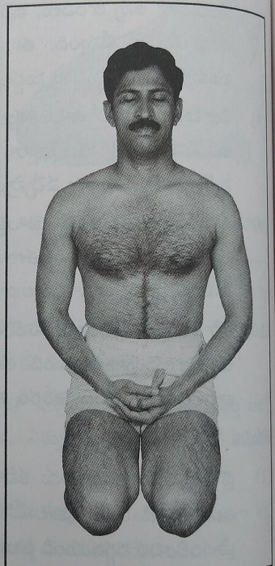
4. Once you are done doing kapalbathi, you are supposed to take rest till the time you feel active and place your hands on your chest and slowly focus on the breathing. It makes you peaceful and doesn't let any thoughts to you, You can know it better when you are experiencing.You should take rest between one pranayama and other pranayama for about 4 to 5 minutes , this is called as meditation.
III.Suryachandrula bedhi: Surya nadi means your right nostril and chandra nadi means your left nostril.Suryachandrula bedhi is done by using them alternately.
Important note
1. In previous two pranayama we took in air using two nostrils and left from two but here you should take in air and expell it by using one nostril a time and then alternate.
2. In the previous two excercises we should press our mouth and nose and it takes few days for us to learn it perfectly. But here we are closing one nostril with one finger so that we can do it perfectly an effectively from day 1.
3.There is no chance of commiting any mistake and entry of air into mouth doesn't happen. Pressing of one nostril is possible by everyone so air travels effeciently.
4)When you open a water tap and place your finger on it the water spills away far, in the same manner the air that was supposed to move through two nostril when moves into one nostril increases the chances of air filling the lungs till the bottom and benefits respiration.
5. We move our head up and down along with taking in air and leaving out air. Lets try with one nostril first.
i.Suryanadi pranayama: Taking in air and leaving it out by right nostril is called as suryanadi pranayama.
Method
1. You should place your right hand ring finger on left nostril and close it , your ring finger and index finger of right hand should be placed as shown below.
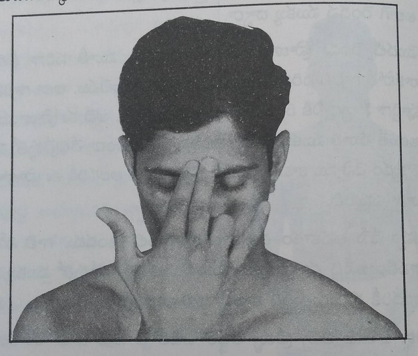
2. You need to sit straight in vajrasan , touch the tip of the tongue to the roof and close your mouth and eyes.
3.You need to exhale the air in the right nostril by bending the head down. You should take in air from right nostril while raising your head up.You need to repeat this.
Explanation
1.The main important thing is taking in air and leaving out effectively.When you are travelling on road its important to reach safe not the speed.You need to do the same with pranayama.
2.We can breathe in approximately 1.5 litre of air when raise head from below.Inorder to take in large amounts of air it is important that we press our mouth.Our lungs gets completely filled when this much air enters inside.You should bend your head down and release the air completely.We can feel our lungs getting compressed and pushed inside easily. You should exhale so that the empty space is maintained.So that you can take in again efficiently.
3.You take 4 to 5 seconds each to inhale and exhale by moving your head up and down. By this you can take in air effeciently and leave out.
4.You get sounds as if hissing snake when you are doing this kind of pranayama.You can take in more amounts of air by closing one nostril by using your hand and you can leave out. In the initial two types you may not hear these sounds due to reduced grip.
Important notes
1.In the initial 5 to 6 days you need to take in air 7 to 8 times and stop.By this time the muscle of the neck and nerves gets adapted.
2. You can do it the maximum number of times since you got adapted. You can do it for 30 to 40 times a day, you can do even more.
3.You need to start it slow and increase its speed eventually just like how a train does, when you feel exhausted you should again do it slowly for 5 to 6 times before you actually stop doing.
4. You should not open your eyes inbetween or immediately after doing. You should rest for 1 to 2 minutes an then open your eyes.
5.In this procedure you can take in air effectively in one day and leave it and other day you can't do so. Once you do it with increased sound and the other day the sound is lost.You may feel why is this happening.You feel so because of mucous movement and obstruction.
6.In this you excrete a lot of mucous and sputum.The waste material that is freed in the previous excercise is excreted now,In some people the nostrils get obstructed now even though they had no problem previously. We should just keep on doing without expecting the results.If you feel difficulty you may stop.
Note: After doing this suryanadi pranayama you should take rest for 2 to 4 minutes untill you get relieved from exhaustion and then start chandranadi pranayama.
ii.Chandhranadi pranayama: Taking in air and leaving out air from left nostril is called as chandhranadi pranayama.
Procedure
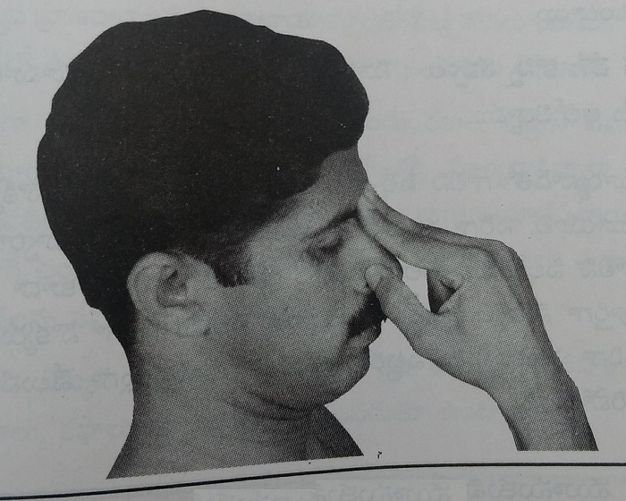
1. You should place your left hand ring finger on the right nostril and close it , you should place your left hand index and middle fingers as shown below.
2. You should sit in vajrasan, with your tongue touching the roof and by closing your eyes and mouth.
3. You need to breath out air in the left nostril by moving your head down and breath in air by raising your head.You should repeat this procedure.
Explanation: Procedure is same as that of suryanadi pranayama
Important notes
1.You may not get as much air in suryanadi as chandhranadi and viceversa.
2. Once the chandhra nadi may get obstructed and suryanadi is good and viceversa or both are good. Don't spoil your mood thinking why, the changes happening within us changes.
Mistakes made without knowledge: Lets understand the commonly made mistakes
1.You need to close your right nostril while breathing with left nostril, if not you can't take in air effectively.You should do the same when you close your left.Many people doesn't close their nostril properly and few don't place it properly on the nose . You should do as shown in the photograph.
2.As taking in air and leaving out air is easy we feel it easy and hence we do it with great speed.You should never do so.
3. People tend to clean the mucous coming out by stoping pranayama but you should never do so it prevents the mucous coming out. You can clean once you are done with pranayama.
Benefits
1. The air we usually take in by both nostrils is now taken by one so it goes in with great pressure till the bottom of the lung.
2. It fills lungs till the bottom ,it happens only in this procedure.
3. You tend to take in more oxygen and leave out more carbondioxide.
4.According to the yoga philosophy our breath has both positive and negative energy. Suryanadi improves the positive energy and chandranadi improves the negative energy and maintain a balance.
5. As we are able to breathe in more air with more pressure all the infection in the respiratory tract and secretions comes out.
6. The mucous in both mouth and sinuses comes out and they help to push the mucous out.
Note
1.You should take rest for 2 to 3 minutes and then start another pranayama.
2. People who started doing newly its better if you focus on 1st three pranayama now and don't bother about 4th and 5th now. You can start them after 15 days.
IV.Brasthika pranayama: We call it as altered negative pranayama.
Things you need to observe
1. We take in air from one nostril and leave out from other different from previous excercise.
2. You should exhale by bending your head down and inhale by raising it same as in previous exercises.
3. You tend to make mistakes initially so keep on remembering the procedure of doing the exercise and do it carefully.
4. You need to change the fingers you place on the nostrils and do this exercise.
5. If you dont place fingers in the appropriate place on the nostrils it gets closed. You should never place the fingers as shown in the image below.
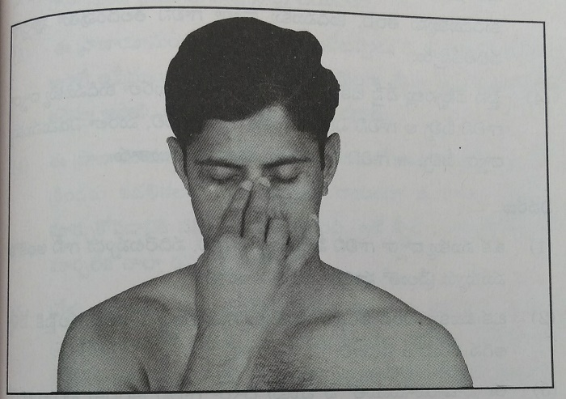
Method
1. You need to sit straight and place the tip of the tongue to the roof of the mouth and close both mouth and eyes.
2. You need to press your left nostril by your ring finger and place the index and middle finger few inches above the right nostril.
3. You should take in air from right nostril by raising your head. Once you reach your head press your right nostril with your thumb and release the air from your left nostril by bending your head. Now you should take in your air by left nostril once you reach up you need to close the left nostril by your thumb and release the air from right.
4. Above mention procedure forms single cycle. You need to repeat this.
Explanation
1. When you are inhaling and exhaling from one nostril you need to close the other one.
2. Exchange of nostrils should be done once you move your head up.
3. You need to inhale through the nostril that you previously ued to exhale.
4. You need to take in air into the lungs completely just like in the third exercise and exhale it completely. The only difference is we are using opposite nostril.
Important notes
1. You should never start this untill you get perfect with the first three.
2. There is no need to stop with 5-6 respirations in the initial days, you can do number of days you can.
3. You should start slowly for the first 5-6 times and slowly increase the speed. You should reduce the speed slowly and stop.
4. You should do head movements slowly in the initial days so that you get time to change the fingers otherwise you make mistakes.
5. Once you get used to changing fingers and changing air movements you can do it as fast as third exercise or even little slow.
6. You can do the above 3 exercises when you have little time.
7. You can hear voices when you are inhaling and exhaling.
Mistakes you do without knowledge.
1. Many people makes mistakes when changing fingers. They tend to change fingers when head is down. Its important for you to remember when to change fingers.
2. People inhale through right nostril and leave through left and keeps on repeating it.
3. Some people can't change fingers at high speed which makes incomplete inhalation and exhalation of air.
4. Its better you do slow until you get habituated.
Benefits
1. There will be a coordination between nervous system and respiratory system. This helps you stay at peace.
2. Taking in air with one nostril and leaving with another nostril easy removal of mucous secretions.
3. Nasal openings and mucou layer get cleaned completely.
4. Changing in respiratory movements increases oxygenation to the cells that lie infront of forehead.
5. You get similar benefits like blood purification, increased oxygenetion, removal of waste materials by doing this procedure.
Note
1. If you get leg pain in vajrasan , sit with your legs straight and place your hands back and bend your neck and sit untill your leg looses numbness and you feel at peace.
2.You should rest for 3 to 4 minutes after doing this and then start 5th one.
3.If you wanna stop after first 4 pranayamas then you should sit in vajrasan or normally with closed eyes for 5 to 10 minutes and focus on the breathings you feel at peace and happy.
V.Inhalational and exhalational pranayama: We call it as happy pranayama. Inhalation means taking in air and exhalation means leaving out air.
Things to note
1. In previous 4 excercises we took in air very fast and leave it fast but now it is different we take in air slowly and leave out slowly.
2.We heard sounds in previous cases while inhaling and exhaling now we need to take in and out without any sounds.
3.Its better you start this after 20 to 30 after the above 4 , once your respiratory rate gets reduced.
4. People with respiratory rate less than 10 - 12 in the morning can do it easily, it gets difficult when your respiratory rate is more.
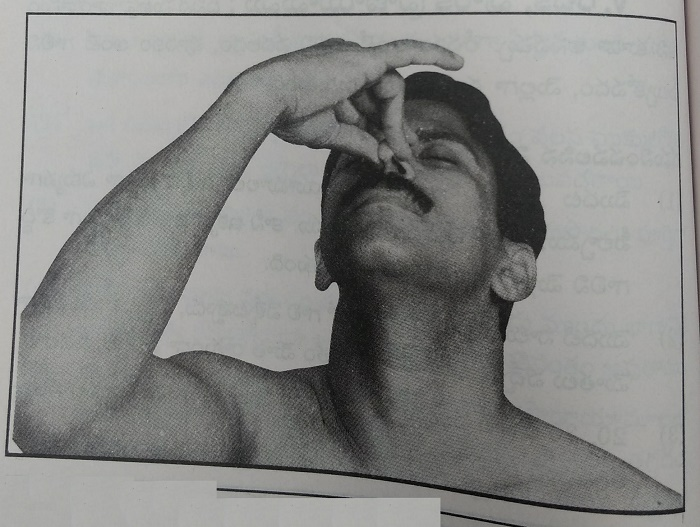
5.The air flow will be same as in 4 th excercise but as the airflow should be slow here we are closing 3 parts of the nose and are taking in air through the other part.You should close your nose as shown in the image above.In the picture right nostril is completely closed and left nostril is closed in 3 parts and one part is open.The nostril which you are closing should be kept open in the back.
6.You can sit normally after vajrasan or sit in the same position and finish the excercise , its completely your choice
Procedure
1.We can sit as we want with back straight,closing eyes and mouth.
2. You should close your left nostril with ring finger and place middle and index finger above the nose and close the right nostril upto 3 parts using your thumb.
3. You should breathe through the empty 1 part of right nostril, once your head stops.You need to close your right nostril completely and 3 parts of left nostril and release air slowly by bending your head.You should repeat the same after exhaling.
4. It forms one cycle.Then again you take in air from the left and release from the right and then take it from the right and leave from the left and then again take from the left and leave from the right.
Explanation
1.In this one nostril is completely closed and other is closed 3 parts.
2. You need to keep the nostril closed 3 parts and open one part through which we are supposed to inhale.We are closing the nostril so that little amounts of air enters in it.
3. If head movements is taking 8 to 10 seconds its acceptable, you can take the same amount of time to exhale as well. As time passes you can take as long as 15 seconds to inhale and exhale each, you feel more peaceful. It means your respiratory rate has become very low.
4.You shouldn't make any noise while inhaling and exhaling.
5. If some people are facing difficulty you can move your head fast and take in air little more.
Important topics
1.You can do 4 to 5 or more cycles everyday.
2.You can practise to make it more slow with experience
3. People with more time can do it for 10 to 15 minutes.
4.People with less time can skip this because it should be done slowly, there is no benefit if you are in a hurry.
Mistakes without your knowledge
1. You may feel difficulty while exhaling due to decreased oxygen.You may feel like opening your mouth.Some people open their mouth, if you are willing to open your mouth then just increase the speed of air intake and head movements and leave out air easily.
2.Some people inhale and exhale at different speed, you are supposed to do it at same speed.
3.Some people do this by making sounds if you can't do this without making sounds you can stop doing this. There is no harm in stopping this.
Benefits
1. We should control air movements and breathe in and out slowly. We can't do this without focussing on the respiratory movements. That is the reason why we won't develop any thoughts while doing this and we stay at peace.
2.In all other pranayamas we used to take in air and fill our lungs completely this pranyama is like a rest to them.
3.This is like shavasana to asanas, sleep to rest and happy pranayama for deep breathing
4.Our respiratory rate decreases to 2 to 5 while doing this pranayama, that is the reason why we feel happy.
5.We can do this pranayama when our stomach is empty, our when we feel low and tensed this gives instant results.
6.This kind of pranayama is like doing medication.People who are idol can do this for 10 to 15 minutes.While meditating our mind deviates and fills with thoughts, but we won't face any difficulties and we stay at peace. Your mind stay in control as long as you do this.
7.This pranayama gives more benefits when you do it after doing previous 4. In this pranayama all the cells of the body are filled with oxygen and it doesn't effect even when you breath slowly.
8. It improves concentration and memory.
9. You can do this when you are not sleepy and get a good night sleep.
Notice
1.People who can't breathe low volumes of air and people with more number of respirations and difficulty in respiration can stop it completely.
2.People interested in meditation can start now
What should we do from tommorow
1. You need to read this repeatedly for 4 to 5 times and understand this carefully.
2.While doing this deep breathing, if you don't do it perfectly you won't be at loss but you may not get completely benefitted.
3.It takess 25 to 30 minutes time to do pranayama, you shouldnot talk or care about others during this period. Don't even see outside. As we are occupied with some work everytime its better we stay calm now and enjoy peace.
4.Since the end of first pranayama we stay at peace and our thoughts stays still.We won't be without any thoughts not even once a day.So,if we can get that peace atleast once a day we are most lucky.
5.You feel happy inbetween 2 pranayamas don't loose this by opening your eyes.
6.Its better if you close your eyes for 30 min till you finish your pranayama.
7.There are many types of pranayama.Many people are used to doing different types of pranayama.So if you are trying these there is no need to stop practising them.You can do whatever you want after finishing them.Everything has atleast some good hidden in them.You can get benefitted.
8. Inorder to attain complete health and stay at peace these 5 excercises are beneficial, you can get benefitted by them.People who started newly can stick to them only, no need of other excercises.
9.Don't take these pranayama for granted thinking that this is just inhaling and exhaling air. Experience it by doing.See whether it decreases respiratory rate or not. Learn the changes that occur in your body practising them.
10. The air we took in excess reaches our blood.This blood reaches all organs even though we don't do any kind of excercises.The air enters a field that is ploughed very fast when compared to the one that is not ploughed. Body without excercise is like an unploughed field, blood supply and oxygen are slowly supplied to it.The bad air also comes out slowly.If we do excercises daily then our body will respond like a ploughed field takes in blood and air easily and leaves out carbondioxide.Its better to do asanas along with doing pranayama.If we are doing them both together there is noneed to do any physical work in life.The relationship between pranayama and asana are like wife and husband they can't be seperated.People who are interested in healthy habits should do it for 1 to 1.30 hrs daily without fail.If you wanna know more about asanas you can read my book on it.
We should be taking sufficient oxygen to our body just like we take sufficient food and water.We can't do physical work everday so, this is the best method for them.In people who do physical work it gives good results.We should allot time for pranayama just like we brush our teeth and bath. People who are in the path of divinity, who meditate and who are interested can do it in the evening too.We usually live in the colonies, doing pranayama on the terrace can cause disturbance to the neighbours, they may get scared or some may get up from sleep due to weird noises you make never reduce your sound, never stop whatever good you are doing.Lets do this valualable procedure everyday and fill every cell of our body with oxygen and lead a healthy life.
15.Deep breathing by chanting mantras
- The chants taught by our elders - They activate all your 6 senses
- If you chant omkaram slowly - It is beneficial for deep breathing
- Chanting omkaram stretches your lungs - It improves deep breathing
- Gayathri manthram - It is the symbol of energy
Our elders say that chanting the main words from any manthra can cause many changes in the nerves.Even science has mentioned that few mantras have these words that activates the senses. Lets think about the chants that improve our respiration, the most known is "Om" karam along with it Gayathri mahamantram.They say that if you chant this everyday it will give power and energy. Our elders understood the benefits of it and made it a compulsion for everyone to chant it.But noone in these days says so. There are many people who find it useless and waste of time.Chanting these mantras at a particular pace can help in deep breathing.Spelling them uses all the air in the lungs.The carbondioxide in the lungs gets expelled by the time we finish chanting,we take in deep breaths after chanting the mantra. Lets understand what changes occur when we are spelling om and gayathri mantras.
1.Om: Lets first understand what does spelling om do to our respiration. They start chanting om with their open mouth and do so without breathing while chanting.They spell mm.. when they lack air and slowly stop you can slowly observe the closure of lungs, if you continue mmm... for some more time even the air in the throat is also released.You can see that the belly button goes inside during this period. This is what happens when we spell omkaram once.
We use all the air that is present in the lungs while speaking. We don't breathe any air while speaking omkaram. The carbondioxide in the lungs is released out from the lungs while chanting omkaram.By the time you finish chanting omkaram your lungs gets closed completely leaving all the air outside.This perfect closure helps in taking in air more efficiently.This doesn't happen any other time this perfectly, it also happens in deep breathing only in few cases when you can take in air perfectly.But here in chanting omkaram everyone can get these benefits without much difficulty. We take in more air when our lungs become empty, there is no need to strain.They happen on their own. The air we breathe in after omkaram will be more than 1 litre, if we put more effort it becomes 1200 to 1500ml. This happens also long as we chant omkaram and it gets used by our lungs and the bad air that gets accumulated goes out.
Our lungs get stretched and closes the lungs completely while chanting omkaram.When this happens all the intercoastal muscles, diaphragm, ribs, nervous system and all other parts that cooperate with breathing gets moved and gets strengthened.Chanting omkaram makes our lungs habituated to deep breaths and it does so even at normal times. Omkaram lays the foundation for the deep breathing we do everyday, we can get the benefits of deep breathing by doing omkaram alone.
That is the why our elders told that chanting omkaram gives you strength we thought it as a superstition or myth and avoided this all these days.More amounts of oxygen enters the body while we chant omkaram.That is the reason why we feel at peace after chanting omkaram for 10 minutes, this is due to increased oxygen intake.If we do it 20 to 30 times when our stomach is empty we get lot of energy and peace.We can do it whenever we are bored , lost in thoughts, tensed , weak and when we are in need of more energy , we get relief by doing this.If we make omkaram a part of our life we can cross path with many hurdles.
2.Gayathri manthra: "Om bhur bhuvasvaha thathsya vithurvareynyam bhargo devasya dimahi diyoyonaha prachodayaOur science tells us that chanting these mantra gives us great energy and power. Our ancestors says that the changes seen in us is great when we spell these words.We need to take in sufficient air and start chanting these mantra till we feel breathless.We need to read these mantra in such a way that it should match our respiratory cycle. We shouldn't read it with more speed or do it with less speed, we should do it as we did in spelling omkaram.If we do this for 20 to 30 times twice a day we can observe many changes within us.The deep breathing also happens in this just as in omkaram.We can increase the oxygen storage by chanting these mantras. We can turn ourselves into powerful people by chanting this mantra. The increased oxygen during this event is used in the purification of blood, producing energy etc. If we chant this manthra everyday we can improve our oxygen stores and live actively throughout.
If we chant the above mentioned mantra everyday we stay happy , healthy and with lots of energy.We can think them as an oppurnity to take in deep breathes and a chance to reduce our respiratory rate.Lets walk in the path shown by our elders and stay ideal to future generations.
16.Benefits of pranayama to meditation
- Meditation for one hour early in the morning - Improves your vision
- If you give importance to meditation - It gives you clarity of thoughts
- You think clear with pranayama - Meditation improves your concentration
- Reduction in oxygen levels - Increases work load on heart
- If you can't spare time for meditation - You are not aware about your body
- Learn pranayama first - Meditate without any difficulty
Meditation is when you focus on one single thing.If we are focussed on god without any other thoughts we call it divine meditation.We ask people who are not present mentally as where were you lost?We call it lost when we are not actually focussing on things that are important at that movement.We call it meditation in english.We have many methods to do in this world. The method you do may vary but benefit doesn't.It is like we be calm and make our soul at peace and enjoy the happiness and reach new depths.The more deeper we get the more we become warm and caring.We may find it difficult to learn good habits by seeing others, but we tend to stay and do good when we get involved too deep. You get good in your thoughts, you change your vision on yourselves and the world around you. Sometimes you understand that the knowledge is same.If we practise to stay calm atleast once an hour we stay happy and positive for the rest of the day.
We have our breakfast inorder to stay energetic and active in the same manner we need to do meditation for atleast and inorder to be mentally active.We eat our lunch because all the energy due to breakfast is used up.Its better to meditate as much as possible inorder to stay active. Our body should also cooperate for us do meditation effectively.Our body and soul has an irreplacable bond. Every thing done by our body has an impact on our soul.Our soul is like a monkey it keeps on wandering.If it acquires taste it keeps on craving for it just like our tongue.Some people love cinema so they keep on recollecting them.It means our soul has a taste.Some people are interested in fights and quarelling.Their soul is addicted to it.So depending on their taste people get addicted to things and crave for it since the time they wake up to till they sleep at night.We can't prevent these thoughts but we can control them.The thoughts we get daily are of 4 types.
1. Unneccesary thoughts
2. Negative thinking
3. Neccessary thoughts
4. Positive thinking
If we can remove the first two thoughts we are left with good thoughts and positive thinking.Its just like avoiding unhealthy food and taking in useful things.Its possible to achieve this by meditation.Many people are interested in meditation but they can't control their thoughts for 10 min and stop.Now lets understand how does pranayama help to this people.
We do pranayama by sitting in vajrasan.We need to discuss here the importance of vajrasan.Our back remains straight when we sit in vajrasan.By doing this we control the impulses from our mind to sense organs.We remain focuused.We are aware that muslims offer their prayers by sitting in vajrasan.Our mind focusses on our breath till the time we do vajrasan.We are only bothered about how deep we are breathing and the number of breaths per min or not?We don't have any other thoughth except these.If we start focussing on this one minute we tend to develop discipline and our soul remains in our control.We are bounding our thoughts on breathing,that is the reason why we are so calm while doing pranayama.Other reason is that all the cells in our body get oxygen in plenty.All the cells of the brain are supplied with abundant oxygen supply.Our mind stays calm when it gets sufficient amount of oxygen.Normally all the actions in our body are under the control of our brain, while doing pranayama our entire body is in resting state takes in oxygen and gains energy.That is the reason why our brain has no need to work and our nerves relax.
Endocrine glands control the functioning of our body parts along with nervous system,inorder to make these glands function properly we need proper blood supply and oxygen.By doing pranayama even these organs gain energy.In this way we are not only providing rest to our body but also making our mind in control.If we do pranayama for 20 to 30 min then we will get a doubt that are we actually breathing? or not?We take breath very slow and for long duration.Respiratory rate decreases, it means that we have a lot of oxygen in our body.When the oxygen level decreases an involuntary signal goes to heart and it tends to work hard and this inturn increases respiratory rate. This is because increased respiratory rate compensates the oxygen deficiency.Increased respiratory rate means decreased oxygen supply.By doing pranayama rate decreases this amkes us at ease.We discussed previously the bond between mind and respiration.This calm state we see in pranayama is what we experience after meditating.If you start meditating after doing pranayama you acquire the state thate you usually obtain while meditating much before.Lets understand what are the problems we face if we do meditation alone without meditating.
Imagine you woke up early in the morning , freshen up and sit in to meditate and closed your eyes and your mind immediately starts acting.Some people think about things that happened the day before, some think about their children,few about their finances and some think about things that long happened, this is because we never really have time and when we actually started spending our time we get all these thoughts.So, by all these things people feel bad that they started meditation to feel better but are inturn ending up being sad and hopeless.
Some people get so lost in their thoughts they don't even reliase they are actually thinking.I told you previously right our mind is addicted to thoughts.We come back to senses only when we feel our legs numb or sleepy.At that time we reliase we are actually lost somewhere and our mediatation is spoiled.
Some over excited people wanna reach deeper states and end up sleeping after waking up they think they went into a deeper state and feel happy.But this is of no use.
Some people are usally very sad and start meditation at that time, but they are filled with many thoughts and memories.They get scared after doing this for 4 days.The reason for this is that our mind is so energetic.We can't really stop this my mere sitting.All meditative methods teach methods to control our minds but its not easy to do it.I can clearly say that only pranayama has this ability to bring our body and mind in the same track.If you do pranayama for few days and then start practising meditation you won't face above discussed problems.People who actually followed this will understand its value and importance.Even though people do pranayama for good health they say that they are peaceful and having good thoughts and qualities than before.By this we can understand that pranayama is not only for our body but also for our mind.Pranayama fills our body with oxygen just like a radio recieves its signal.
17.Damage caused by mucous and sputum
- With proper immune system - Our body faces bacteria very fast
- Nasal congestion - Causes much trouble to lungs
- Walk atleast for 30 min - Do atleast some physical work everyday
- Low immunity - Troubles your lungs
- You should do pranayama regularly - Its an excercise for lungs
The cough and cold we get frequently affects our respiration.As everyone get them it became a casual thing.We are taking medication to treat it temporarily and are not preventing.We find it trouble to sneeze and spit but we are not aware about the trouble they cause to the lungs.Lets understand the reason why they occur and the trouble caused by them.
Cold: We see children mostly suffering from cold, sneezing and with frequent fevers etc, we see them visiting doctors with these complains.Children will be lazy and weak when they have cold, if these colds are frequent they get affected even more.
People usually say they get cold when they are exposed to cool weather, when they drank cool water or exposed to dust.The air we breath has bacteria,viruses and many chemicals.The mucous layer in our nose prevents their entry.During cool times the cilia above the mucous layer stops functioning, this leads to bacteria entry.If our immune system is strong our body fights these bacteria and protects us.When we have low immunity all the bacteria fungus that enter into our nose settles down there, our body has to work more to push them out.This leads to swelling of the glands and increased secretions.The chemicals in these secretions cause burning sensation, itching,sneezing etc.The swelling of walls of nose makes it difficult for the entry.This reduces the entry of air into lungs.They tend to do mouth breathing.This kind of cold relieves in 3 to 4 days if our immune system is proper.In people with less immunity it lasts for 3 to 4 weeks.When the mucous is stored in it happens to cause throat pain, itching and ear pain etc.If cold persists for long duration, it leads to closure of internal nares and we feel breathlessness.We observe that the nostril on the side we sleep gets obstructed and thick mucous forms in our nose.As the mucous gets thick and swelling develops polyps tend to develop inside our nose.They cause trouble breathing and prevents movement of mucous outside.Damage occurs to the nerves that percieves smell and we don't feel any smell and taste.If this problem persists only to nose it used to be best but it causes trouble to the respiratory tract.As we are incapable to breathe in air effectively, we won't take in sufficient air and the oxygen that enters the blood decreases.Lack of oxygen causes many effects in the body.This is the reason why children become weak and slim after they suffer cold.If these colds occur once in a month they cause damage to the respiratory tract and makes us prone to asthma and cough.Inorder to cure colds or prevent them it is important to have a good immune system. Inorder to achieve this we need to see that our house has sufficient air flow and light and atleast stay at home without closing their windows. We need to drink more amounts of water and stop taking cool drinks , water and change our dietary habits.You should take in naturally occuring food like fruits, raw vegetables and seeds.You should stay away from sweets, nonveg, oils etc.You need to do sufficient amount of physical work.People with sedentary lifestyle should atleast walk for 30 min.If you follow them carefully you wont get cough, cold.In these days people are using medication as soon as they get cold, they are putting nasal drops for small children.These drops are damaging the mucousal layer and they are suffering from bad immunity, this is leading to severe cases.As these drops are controlling cold they are presenting as chest infections within few days.So, its better you take few precautions when you get cold, this reduces the difficulty.I had mentioned ways to overcome cough and cold in my book"What should we do when we are suffering from cough and cold"You can get relieved of your symptoms by reading those books.Inorder to make sure that air reaches the lungs adequately, there should be no obstruction,So we should make every effort to cure cold as soon as possible.
Sputum: It has been quite common we see people suffering from cold, cough and increased mucous production.In children it causes ronchi and wheeze.The cough that is the reason for cold is also the reason for mucous secretion.The air we breathe contain lots of chemicals, bacteria and viruses which cause damage to our body when our immune system is weak.This leads to nasal congestion and increased mucous secretion.As mucous secretion increases this narrows the path for the air flow to occur.Our lungs lose the capability to take in more air.The mucous which is produced is pushed out in the form of sputum. Cough helps in pushing this out.The main reason why these cilia gets damaged is due to smoking.In people who smoke the air way gets damaged easily.people who work in certain industries and mines inhale harmful substances and are prone for diseases. Increased mucous secretions fills the bottom of the lung and the tubes that carry air get eventually closed. The air is not entering into our body efficiently, it is neither coming out.The alveoli gets filled with air, this breaks the walls of alveoli and air tends to stay in lungs, in this position even though we can take in air it gets difficult to exhale it.They struggle to expell the air.As the stored air has more amounts of co2 our body strives for oxygen.This leads to rapid breathing.But as the air can't enter inside the lungs the breathing is shallow.The disease of lungs that mainly affects the respiratory pathway is bronchitis,asthma,bronchiolities.We all are aware about these diseases.When we are suffering from these diseases we don't get sufficient oxygen we get tired , exhausted and weak easily.Inorder to prevent this scenario we need to improve our immunity.By doing pranayama not only does the air flow improves but our lungs gets energy and immunity increases.There is no chance for the entry of microorganisms and settling insid our body.People suffering from above mentioned diseases should do pranayama everyday inorder to stay healthy.
18.What should we do when we are suffering from cough and cold?
- Never use powerful medication-Don't damage the immune system of our lungs
- Consume only fruits at night - Think this as a cleaning time
- Drink luke warm water - Mucous gets expelled
- When the sputum is in your throat try to vomit- You need to do this on an empty stomach!
Everyone suffers from cough and cold, some use powerful medicine when they can't bear them.Some face these difficulties. If we start using medicine for temporary relief we spoil our immune system.Inorder to prevent these effects only thing to do is complete excretion of this sputum.Lets learn how we get relief and follow them accordingly.
Cold
1.When both your nostrils gets congested and you are not getting proper breathe, take honey and apply it in both nostrils, after applying honey a thin mucous layer comes out.You sneeze 4 , 5 times with it.That congested mucous comes out.You can do this atleast 4 ,5 times a day.You can do this even in children.
2.Drink lukewarm water.
3.If you are having cold its better you drink 1 to 1.5 litre more water inorder to reduce the cold.It means you need to drink 6 to 6.5 litres.You are supposed to drink 3 to 4 litres since the time you wake up to 8,9 ,litre per every hour.
4. If you are facing more trouble its better you stop eating breakfast and eat fruits or drink juices with honey twice.If you still feel the difficulty you can drink honey and water 3 more times.
5. Its better you consume light dinner till 5,6 pm or eat fruits at night instead of food.If we eat our dinner early, out body gets lot of time to protect itself and remove these waste.
6.Apply coconut oil to your face and place 1 to 2 buckets of hot water in your bathroom and sit on a small stool after removing your clothes, apply these hot water to your face first, you do this for 4,5 seconds, this dilates the sinuses releasing the secretions.You should apply the 1 to 2 buckets of water by using your hands.You can do this twice a day.
7. If you do so as mentioned above it increases the temperature in the nose parts and the mucous moves completely and come out.You need to take in more amounts of air and then release it by using both nostrils, this expells the mucous.If you do for 5 to 10 minutes two times a day, you get a lot of relief.
8.If you feel any difficulty in cold , you can do these things and only do 2 or 3 excercises.
9. If you feel very difficult you can add eucalyptus leaves to water and boil them,take steam with these water.You can take steam once a day or once in two days.Its better you apply coconut oil to your face and neck before taking steam.
Sputum
1.You should drink luke warm water.
2.Water you drink should not be less than 5,6 litres.
3. In the mornings if you chew a neem stick and spit, the bitterness in it pushes out all the sputum and you feel at ease.You can manually remove by using your finger.
4. If the problem is troublesome, you can start taking honey and lukewarm water with lemon in the place of breakfast, you should drink it thrice till 1 pm.You should also drink water in between.
5.Only eat a single meal during lunchtime.
6. You should do the same in the evening just like in the morning.If you can't just stay on them you can eat fruits and drink honey water.The energy preserved during night tries to remove these wastes from our body, thus we get free easily.
7. If you get chest pain due to sputum, apply coconut oil and a hot pack, it dilates the blood vessels and breaks down the mucous material.You can do this twice a day.
8.You can apply steam to your chest, once or twice a day , this warmth provides us soothing and we feel relieved.
9. If you have lot of sputum in your throat then drink 5 to 6 glasses of warm water and try to vomit manually only when your stomach is empty.
By remembering these tips you can use them depending on the problem you have.The more faster these cold and cough gets cured the better it is to lungs.These natural tips remove the waste and improves the immunity.Our body also produce antibodies inorder to fight these problems.This is the technique of curing a disease without medicine.
19.Benefits of pranayama
- Benefits of deep breathing are excellent - You can experience them on practise
- We develop peace after pranayama - It improves our concentration
- Supply oxygen by doing pranayama - Increase your energy
- Sufficient amount of oxygen to brain cells - Improves your memory
- Practise deep breathing - Fill your respiratory tract completely
- You need to add rice in a boiling water - You should always meditate after pranayama
- Your face glows - There is lot of happiness in doing pranayama
- Pranayama changes you mentally - You tend to remain calm, patient
We need to work very hard to get good benefits, only few provide good benefit without much effort one such thing is deep breathing.You get excellent results if you do it 25 to 30 minutes the morning and 20 to 25 min in the evening everyday.If we can't give atleast such less time we can't really be happy.You might have done many types of meditation and you may be experienced, but start doing these once and you see the changes in you physically and mentally.If we analyse the good and bad in everything we tend to develop.I analysed other meditation methods.I learnt that our technique has given good results in less time when compared with others.I felt amazed when people share their results after following this.Lets understand what i learnt on practise.
1. We tend to sweat more.It starts initially after 5 to 10 min. Our body gets warm and we sweat just by sitting there.If the outside environment is cool we feel sweaty only in the neck region and arm pits.Sweating early in the morning removes all harmful toxins.Here we are sweating by simply sitting.
2. After doing this pranayama when we just sit we feel at peace.Actually we keep on getting thoughts but in this case we feel calm and in state of blankness and emptyness till few minutes after pranayama.You have this mentally calm effect after a week of practise.
3. If you can count the respiratory rate initially in the first one week, it comes down to 8,10 times per min.Some even have rate of5 to 6 per min.It gives you great happiness and your mind stays calm by doing this.We leave the outside world.
4. As we humans started doing deep breathing twice a day, our lungs fill air to the fullest and expell it completely.If we do this throughout the day, like deep breath ,less rate all the cells will be filling with oxygen and our lifetime increases.
5. The carbondioxide also gets excreted.When we send in oxygen with more pressure , more amounts of carbondioxide gets released.Its like we get urine only when there is excess water, in the same manner co2 comes out only when there is sufficient pressure.By doing this pranayama all the waste material goes out leaving good behind.
6. We get more energy.The most important thing to our body is oxygen, if it is provided correctly it gives lot of energy.Our lungs play a role of well oxygenation.Humans can do their work with more energy"Swamirama"a great saint wrote a book holistic health on deep breathing.One minute of deep breathing provide energy for us to sustain for 24 min, doing this 24 min per day can make you active throughout.Deep breathing can fulfill the needs of our cells.That is the reason why we get so much energy.
7.Doing this can make it a habit to do chronic breathing when your stomach is empty or when you eat raw food or when the pranayama is just finished, you feel light.Our breaths are so slow that we can't even feel them.All the cells in the body gets filled with oxygen.Its natural if our respiration very slow, it indicates complete and proper functioning of our lung.
8.Doing this everyday prevents infection, mucous producion and excretes the waste that is produced regularly and maintains your lungs clean.Their is no waste left inside, it comes out as soon as it is formed.As this cleans your lungs you will not experiene cough, cold and respiratory infections.
9.We get rid of frequent nasal congestions.Taking in air and leaving out cleans the nose and sinuses and makes them clean without any infection.So storage of waste doesn't occur and infection too.
10. There will be lot of improvement in memory and concentration.The brain cells need more oxygen and deep breathing provides them with increased oxygen and energy, so they work effeciently and very fast.
11. Thi works as a boon in obese people, they have twice the needs than we do.Our lungs can't fulfill our body and cell needs.That is the reason they have cold and weakness all the time.If they do physical work oxygen input is more.They have problems like joint pains and weight gain due to long sitting etc.By sitting at one place you can provide the energy to your entire body by deep breathing.We get cramps and pain in the legs due to reduced oxygen.By doing this pranayama all your problems get relieved.You can get rid of weakness and cold.The sedative state they experience is completely lost by deep breathing.
12. The oxygen that enters in deep breathing is more when compared to physical excercise.We need energy inorder to work,along with the energy co2 also gets released into the blood.Inorder to expell this co2 we breathe in more 02.But in deep breathing we are providing more oxygen even without co2 production.
13.It cooperated for many who wanna meditate.We take 20 to 30 minutes to remain so and next 10, 20 minutes our mind stays without any thoughts.Again there occurs disturbances.Many people say you obtain what you want only for few min if you spend one hour.But when you do deep breathing for 20 to 30 min your body reaches a state without thoughts at this time you can start meditation and gain good benefits.If we add rice to boiling water it get cooked easily.In the same manner meditating post pranayama is beneficial.It takes lot of time if we start meditation alone,You get more happiness when you combine them both.
14.Yopu should do pranayama first and then do asanas becuase pranayama increases oxygen reserves and decreases respiratory rate so you tend to do the asanas for long time without getting tired.This gives you good benefits and you get more excellent results.
15. If you do this deep breathing first and reduce your respiratory rate you can easily do other pranayamas in practise outside easily.We do them easily without any effect.
16. In this pranayama we usually contract main parts tightly and breathe in and out air.After doing pranayama we loosen our face this improves blood supply and oxygen supply.You get good tone and glow on your skin and you look beautiful.People who wanna look good can do this.
17.Inorder to excrete or destroy any metabolic waste we need more amounts of oxygen.When we have sufficient oxygen stores the waste materials gets destroyed and get out through excretion.Deep breathing improves the functioning of excretory system.It cooperates by preventing waste accumulation.
18.We can protect ourselves from chronic diseases by doing pranayama everyday.
19. When our respiratory rate decreases our mind listens to what we actually say.We can get rid of anger, irritation and tensions.We develop patience.
20.We get sleep immediately after lying down.We usually get surrounded by various thoughts disturbing sleep.By doing this you get good sleep.It provides us with sufficient oxygen even at night.We stop snoring and air flows freely without any obstruction.The change in sleep duration occurs by doing deep breathing regularly.You may not need many hours of sleep.
I described all my experiences above after trying deep breathing, we humans are not even taking oxygen that is freely available and suffering.We learn the technique of breathing by this and we get the above mentioned benefits without demand. This pranayama should be learnt and practised by everyone in the family and yeild good results.We are seeing that people these days lack patience and peace, if you have low respiratory rate youcan achieve them easily.I understood that the results we get mentally are more than what we get physically. Inorder to have the feeling of mental fullness you should do it regularly.I hope you all try this and get benefitted.
20.Doubts- answers
- Bleeding through nose - Reduces whn you stop pranayama for 2days
- We cant breathe properly with cold - Putting honey drops can help
- Continue pranayama - Even with improper excretion
- Dont stop doing pranayama - Do it always on empty stomach
- There is no defect in pranayama - It is due to defect in following rules
- Stop it slowly- Be wise in following
- Dont move to spit - There will be no use in doing vajrasan
- Take in oxygen - Leave out waste materials
- Do any type of pranayama - Reduce your respiratory rate
- People with any disease can do it- It causes good changes
- It causes beneficial effect on thyroid - Changes its action
- Pregnant women can also start following- You can provide foetus with sufficient oxygen
- Focus on the tip of your nose - It helps in maintaining your respiration
- Jog without getting exhausted - Sinus problems are resolved as mucous gets evapourated
- Eating stomach full - Prevents diaphragm movements
- Dont sleep before food digestion - You may suffer from fatigue
- Calculate respiratory rate- Reduce it by doing pranayama
1. What should we do if our nose leads while respiring?
Answer: Every one person among 1000 face this problem while inhaling and exhaling air, Mostly during exhaling. Some people when do force breathing feel tingling sensation while doing so and feel 1-2 drops of blood coming out along with air and mucous. There is no need to worry if this happens, you can stop it for the day and continue later. If bleeding is little more you can apply wet cloth for 10-15min and take a break of 2-3days.
2. Is it okay to do pranayama with nasal congestion?
Answer: When suffering from cold the mucous lining thickens and it obstructs air flow. You can stop doing when it is difficult. It can be watery and thin you may not face trouble breathing, in this case you can do 2-3exercises. In order to remove the mucous secretions, you should take in air by mouth and leave it by nostrils because we cant take maximum amount of air during this period. We cant breathe out air when we cant take it in. That is the reason why we cant do the above mention exercise with cold. We need to breathe in air 20-30 times by using mouth, this relieves us from cold. You can apply honey or remove manually when mucous gets hardened.
3. Some people asks whether this is a scientific method of doing meditation when we never heard of this before?
Answer: Many people approached us with same doubt.Many are aware that it is good for health but also few started following it.Even allopathic doctors suggest doing this as good for health.But no one else what we do like closing mouth and pressing noseetc, this causes more sound in us and less in them.It means we take less air, what is the use of doing when we take in less air.Inorder to breathe in more amounts of air the method i told is very helpful.That is the reason we are developing sounds.There is no other reason.Its like the air coming depends on the size of the tree,here also it depends on the way we do.We get more benefits than anywhere else.The beneficial one is the true science.
4.Can we do pranayama without excreting in the morning ?
Answer: We can take in more air when the excretion is good, as all the gases from the stomach are removed.We can take more amounts of air.We can take in sufficient air when the excretion is good.If we don't excrete we get tired too soon and take in only less air and appears little difficult.But if you pranayama even though you won't get full benefits you can atleast have half of them.Our mind gets calm immediately by doing pranayama.You can try to excrete once you are done with pranayama.Its better than completely stopping.You can stop when there is gas in the stomach and person has constipation
5.When can i do pranayama if it is not possible early in the morning ?
Answer: If we can't wake up early in the morning may be because of sleeping late or as we didn't felt sleepy we should not stop doing pranayama for the day.You may not get the benefits of the environment but pranayama gives the same effect whenever you do it.But only in the early morning our nostrils are free, they won't be that free at any other time of the day.Some people may have the habit of waking up at 6 or 7 in the morning.You can do it at anytime in the morning without eating anything.In the evening you can do it when your stomach is empty or you are very hungry.Its important that our stomach stays empty not at what time.Its better you do it twice a day.
6.Why do i feel like my ears are blocked as if they are getting more air?
Answer: We can hear things only when little air enters it.This mucous also enters the eustachian tube that send air into middle ear.You feel like ear blockage in the beginning when you start pranayama due to movement of these mucous.As we are breathing more air we feel like more air enters the ear through eustachian tube.The reason why we don't hear properly when we have cold is also this mucous.You will not see any problem once youget adapted, you start seeing these symptoms once again when you suffer from cold.
7. They say that children with congenital deafness and mute can't speak because they can't blow enough air .Does this pranayama benefit them ?
Answer: When you fill a bucket with water upto half and blow you can see bubbles, but it is not the case with deaf and mute children.This pranayama cause excercise to this muscles and nerves.If the air is entering into them correctly they can hear, if enters their mouth correctly they can speak.This excercise improves the blood supply and oxygen supply to these organisms and help them in breathing air slowly.Some people achieved this by doing so.
8.Does taking in air and leaving out air so forcebly damage our blood vessels in nose and brain?
Answer: We may have this feeling due to the sounds we hear, there won't be any effect on the nerves and vessels due to our breathing.This pressure falls only in nose and the respiratory tract nothing else.This pressure doesn'tcause damage to parts in throat and we don't get any difficulties moving our head up and down.
9.Sometimes we may feel dizzy after stopping of pranayama, sometimes we feel movement of nerves why?
Answer: This happens in many people, this is not the fault of pranayama.These occur when you don't follow all the rules mentioned properly.In the 2,3,4 excercises we are supposed to move our head up and down , you tend to do it 20 to 30 times a min and suddenly stop when you are exhausted, if you climb a bus sudden break can cause a jerk, in the same manner our nerves also get affected due to the sudden jerk.So always start slow , increase the speed gradually and stop while decreasing the speed eventually just like a train.You won't face any problem when you stop slowly.These problems won't occur when you do it accordingly.We need to do pranayama always with closed eyes, some people can't close their eyes for so long so they tend to open and see around.We may feel dizzy when we suddenly stopped our head movements and open our eyes.Inorder to prevent this we need to open our eyes only 1 to 2 min after pranayama.
10. While doing pranayama sputum used to release should i spit it by stopping vajrasanam in the middle or should i swallow it?
Answer: We usually sit in vajrasan for doing pranayama for 15 to 20 min.After 5 to 10 minutes you may feel you legs becoming numb.During pranayama all the waste tends to come out, we find it difficult to get up as our feet are numb.So its better we maintain a tissue paper , cloth or dustbin to spit.Some people have to get for 5 to 6 times inorder to spit.But the benefit of vajrasan is lost when you get up frequently.Your legs won't get benefitted.You should always spit outside, you should never swallow it.The problem within us should go out not come back in.
11. Do headache becomes severe for the people suffering with headache after starting pranayama?
Answer: People with headache feel pain when there head showed any movement or when their neck is bent more no of time or for long duration they tend to develop headache.These people also get them when they hold tight their face and mouth parts while doing pranayama and forgetting the rules of doing pranayama.Some people do for long durations initially as if they want results in one day and get these pains.You should do it for 5 to 6 times during day 7 to 8 and tehn increase, if you keep these things in mind you won't suffer.
12. Is there any chance for the formation of sputem in nose during initial days of pranayama? Does it cause fever?
Answer: In many people we see suffering from cold, we see them in people whose nose and sinusis get affected frequently.They come out only when they are soo big.As we take in air heavily this moves this mucous out.There is no problem by this, you shouldn't stop this by thinking you developed a new symptom.This is bringing the waste within our body to outside.Some people who are actually prone to fevers blame pranayama for that.As the process of the mucous removal is fast so some may develop fevers, but there is nothing to blame pranayama for it.
13. We are willing to do the pranayama you taught us, but we are following some other technique since many years.Can i do both and what should i do first and why?
Answer: Many people might be doing pranayama since many years and they mostly knew about sukhapranayama, we breathe air slowly, don't stop doing them everything has their own benefits and you can do them both at once.Its beneficial.It is better you start doing what i taught you first as it cleans the tract improves blood and oxygen supply , increases body temperature.Air enters till the bottom of the lungs.You can do these excercises after you do pranayama given by me.You can't do slow techniques properly when you have low oxygen reserves, you get tired easily.What ever is good is beneficial.There is nothing like you have to follow me.Do whatever you wish and modify based on your own experiences.
14. Is there any disadvantage if pranayama not done in a correct procedure?
Answer: There is no chance we commit mistakes in this.There is nothing secret or confusing in this you need to take in air completely, leave out .There is no loss when you don't breathe completely, it benefits when you can take in air completely.If you can't spend time on this you may not get results, it will be a loss when you won't do slow pranayama correctly.You may suffer oxygen deficiency when your body oxygen stores are finished.In thisyou get some kind of benefit from day 1 and there is no loss.
15. Do people with heart disease and other severe diseases can perform pranayama? Does it cause any difficulty?
Answer: Doctors suggest heart patients to do deep breathing as heart and lungs have close relation.More amounts of oxygen travels in the blood and oxygen demands of heart are met and we won't feel any pain.People get fatigue and weakness due to oxygen deficiency.By doing this pranayama there will be visible changes.They will be scared that their heart may stop due to deep breathing.This doesn't cause any trouble to heart.It is better if people suffering from chronic diseases do this.Inorder to do their function properly all we need is correct amount of oxygen.This oxygen is needed for repair and provide us energy.so people with any disease can do this.
16. Is there any advantage for thyroid patients by doing pranayama?
Answer: Thyroid gland is present in the neck region, it not only needs iodine blood supply to this gland is also important as this moves nutrients and iodine to the gland. This causes trouble to the gland also.It is beneficial when people suffering from thyroid problems and goitre do this.In pranayama, there are increased movement of neck and thyroid gland its muscles this inturn improves blood circulation thus causing heating of the gland.The changes are so good that the swelling decreases without use of medication.Its beneficial to do pranayama.
17. Can a person increase his memory and concentration power by doing pranayama?
Answer: The organ that needs more amount of oxygen is brain.Its functioning depends on the amounts of oxygen.We stay happy and calm when oxygen reserves in blood are more or we have more oxygen in the food we eat.We do things with utmost concentration during that time.When there is oxygen deficiency the organ that gets affected first is brain and its cells.Pranayama improves brain function by providing it more air.There will be lot of changes before and after doing pranayama.We don't get this without experience.Students if do meditation for 20 to 25 times per min have a great impact, they can reduce their lazyness by doing so.
18. Can pregnant women do pranayama?
Answer: Pregnancy has increased oxygen demand because the baby has to take air from its mother.They don't really do any physical work these days, this decreases oxygen input. Previously pregnant women used to work hard till the day of delivery.They used to get neccessary oxygen for babys growth by those physical activities.They used to stay healthy.People who don't do any work any do pranayama to compensate for the oxygen deficiency.Its better if they do it twice a day.As term comes close the abdomen obstructs the lungs and its becomes difficult to breathe air.Pranayama sees that the remaining 2 thirds take in sufficient air.Its better to do pranayama compulsarily.
19. How to inhale air while walking and running slowly?
Answer: Its better you focus on the walk and think about it rather than talking to someone else.Walking fills only upper two parts of lungs, its better you do something that filla the bottom of lungs.While walking you should focus on the tip of the nose and take in breath slowly and deep and leave it out slowly.By doing this respiratory muscles, intercoastals, lungs stretch and take in more air.This increases the volume of lungs and this raises your chest.If your chest and stomach raises to much extent it means you are taking in maximum air.We take in more air in less breaths.You need to remember that inorder to take deep breathing while walking your mind and heart should cooperate.Do deep breathing like is of great benefit.
20. Do pranayama helps people suffering with sinus and breathing problems because they cannot be cured by using complete medication.
Answer: Medication to cold is just a temporary relief not a permanent one.50 TO 60% people get completely cured by doing pranayama.In some their is need to change there diet.These people have mucous dripping all the time.In the beginning they find it difficult to breathe in air.This makes it difficult to do pranayama.People with young age can do this my moving their hands and do this for 30 min. Doing this evaporates little mucous and makes it easy to breathe in air.You can do pranayama for 20 to 25 minutes and helps clearing People with this problem takes 10 to 15 days to solve these problems, you may be facing difficulty inbetween but you get habituated eventually.Its better we follow these rules.You can use this without facing any difficulty.
21. Can we do pranayama while menstruating ?
Answer: Pranayama causes movements above the abdomen.While menstruation uterus is so soft we shouldn't do anything that troubles it.The stress of asanas fall on the uterus and cause pain and increases bleed.But any type of pranayama doesn't cause any trouble on the uterus.You can continue doing it for 20 to 25 min.You should stop doing abdominal brasthika and do remaining 3 4 as usual.
22. Can adenoids and polyp cured without operation?
Answer: We can't say that it cures in everyone, taking proper diet, drinking warm water and taking in steam along with pranayama can help better.People with little difficulty can put honey in their nose and start doing pranayama.Its better you do brisk walking or running before you do pranayama.Breathing air like this frees your notril.Infection decreases slowly.If doesn't decrease then you should start following diet and do pranayama after a month.If you do them both there will be no need of any surgery.You can try any other thing even though it doesn't work for 4 to 5 months.
23. Is there any change in respiration process falling sleep after having food?
Answer: Immediately after food your stomach gets bulky and it increases pressure on the stomach.This heavy stomach prevents diaphragm from closing, this inturn leads to improper closure of lungs.The air enters completely only when the diaphragm contracts completely.This decreases the air uptake by 25 to 30%.We call it as fatigue, this is related to lungs.It means we are not getting sufficient air, the reason for this is the food we eat.If you tend to sleep immediately after food this further presses the diaphragm, we may not feel this problem if we sit straight after food or do some work.That is the reason why our elders scold us when we sleep immediately after food.If you roam untill the food is digested we won't feel exhausted.
24. People with which age can do pranayama?
Answer: There is no age limit for doing pranayama, 3 year child to old woman can do this.You may be thinking children play alot what is the need for them to do this excercise.Even though they play a lot the air doesn't enter with this much force.They tend to suffer from minor infections.If we teach them these things we can protect them from cough and cold.They become active if you teach them, they learn things real quick.We observed these changes in young people.Its better you make old people do this because they don't move with increasing age.It makes them feel sleepy.They experience fatigue when they sit and eat in oldage, now they stop facing these problems.They usually feel anxious this helps in relieving it and makes them at peace.So everyone can start doing this without any change in their age.
25. How can we calculate respiratory rate?
Answer: You can count on your own or you can ask some one else to count for you.You should count when there is no food is in the stomach.Presence of food varies the rate.If you wanna notice the change the after eating you can note down but you should always do so in the morning. We used sleep in supine position and ask some one to hold a watch and measure the time and rate.Movement of chest above and below once is considered as one time.You should ask others to measure it without our knowledge.We can do it own our own by placing our hand on our stomach and but there is chance the we decrease our breathing while counting.If the respiratory rate is low its better.
21.Experiences - Memories
Pranayama - For a happy life
My name is vishala and my age is 31 years.I do pranayama everyday, i started doing pranayama previously by reading books but it didn't work out.I used to do and stop.After marriage me and my husband started doing pranayama as suggested by dr.manthena satyanaryana raju.
There is much importance to oxygen levels and our health.This oxygen we breathe reaches all the cells of our body through blood and co2 is released outide.All the chemical reactions in the cell occur in the presence of oxygen.Inorder to function properly our body needs oxygenated blood all the time.The oxygen is as important as water and nutrients.We are living in a hurry that we even forgot the correct method of breathing.We are taking shallow breaths, some part of lungs is always empty.Once the air reaches the bottom of lungs oxygen supply occurs perfectly, we face many problem due to lack of oxygen. The solution to this is practising dr.manthenas deep breathing all the time this increases oxygenation.
Im sharing my experiences regarding this.I can clearly feel air entering into and out of the lungs.I feel like all the cells in my body are activated while doing pranayama.I feel at peace.As our ancestors figured out the importance of bonding between breath and soul , many of our yoga techniques are based on this.The character of a person helps the person in maintaining his breath.We need to sit in vajrasan and do pranayama , it gives us immense satisfaction and we feel our mind and body got seperated few minutes after doing this.We don't even get the thought that we sat for so long and i am practising this twice a day for past 1o years now.I had great experiences, it may take time to adjust when i used to sit in sukhasan to meditate, if i do meditation immediately after pranayama i feel great.I understood why doctor used to suggest pranayama to his patients now.We can make a connection to god only when our mind is calm.Pranayama enlightens your mind and body, i experienced lot of changes in the first few months.My body became active, i put on little weight, my face became clear and people asked me what did i do.I understood that asanas are as important as pranayama.I felt changes mentally.
Dr.manthena has wrote his experiences in the form of a book, it is of great use.Its better if we understand the importance and follow them regularly and gain benefits.
Thanking you
Dr.manthena vishala
HYDERABAD
Pranayama - completion
There is a saying that we can do good only when we are healthy, so its the responsibility of every human to preserve his health.Inorder to stay healthy first thing we have to do is pranayama.The patanjaali baba said it right the 8 yoga methods yama,niyaama and asana are related to our body.Pranayama, prathyahara, dharanalu arerelated to body.Dhyanam, samadhi are related to enlightment.
Dr. manthena has acheived a lot more when comes to health and become an ideal person, he wrote 4 books on tips for satisfying lufe and now he is providing us with 4 more books including this.
Pranayama gives mental stability to both body and health.By practising this pranayama everyday the oxygen cells improve in every cell and our body gets completely cleaned.Rate decreases and we stay healthy.We need to do things with clear mind we can't achieve things without that.How to control our body?Its quite impossible, we don't need energy for this we need a plan, that is pranayama.This is told by bhagwan shree ramana maharshi in his speech.
Vayurodhana liyathe manaha |
Jhala pakshiva dhrodasadanam||
The bird within a trap stay restless just as our human body without performing pranayama.
We get a question here.How does our mind stay not responded to oxygen?Our mind and life have a close bonding, that is the reason why our body stays in control.This is what shreee ramanulu taught us.
Chithavayuvachithkayuyuuthaha।
Shakayordvahishakti mulakam॥
Our energy has two main branches they are chiduytha chittam, kriyayuktha chitham.In this the air enter into and out of the body and in chitham our soul moves in and out through our senses.
Even though the life and soul may vary they are actually same.If we can control our respiration the mind which was previously not in our control comes into it.Then our life is like a garden.Its very important to learn such interesting method.
By the inspiration of dr. manthena we started a naturopathic centre and are running it successfully since 2 years, his method of pranayama was so easy to learn and has scientific meaning involved in it.We yeild good benefit and are teaching many people through our yoga centre.We are very happy by seeing quick results.Previously many people used to drop in between as they don't see any benefit.By the method taught my doctor people are experiencing quick results like improved respiration,energetic and improved blood circulation and mental peace.This is increasing their interest and noone is stopping in between.I hope learning this pranayama is gifting them with good health.
Many people are living a happy life by reading and following dr. manthenas books. I'm happy that he took effort for our sake.
"sarvejanaukhinobavanthu."
Maadhireddy Nrusimhareddy,
Naturopathic yoga centre, Hyderabad.
Pranayamam- A complete exercise
According to my experience and knowledge human race can lead a happy and properous life when it leaves its artificial lifestyle, which is against the nature and follow laws of nature and live a nature friendly life by following and respecting 5 rules of nature- excretion, water, rest, food and excercise.No human being shouldn't be going against his own roots.We need to be in an attitude that we leave all the habits that are against the nature for my own good and for the welfare of my family and future generations.Human should enjoy freedom as nature being.I understood the deficiencies of my life by consulting dr. manthena.
I was aware about yoga and pranayama since past 2 decades but understood the scientific reason after attending his clas on yoga and pranayama in our village.For example fat accumulates in area with least movements, the solution lies within the problem.If you are interested in following naturopathy you should start immediately and i bet you pass with good marks.If you follow diet habits you pass with 2nd class and iin first clas if you the laws of resting too.Im lucky if this happens and otherwise its okay, im happy that i passed in my life.People who do physical work can have a discount in dietary habits.His efforts cleans his body from inside "You should stop eating on a day without physical work" But we are having meals in the name of parties and dinners.If you tongue lost control you loose balance That is why you should fast the day after you visit a party.
If pranayama is an oxygen supplying unit then our body is a recieving unit.That may be the reason why dr asks us to do pranayama first and then asanas.Pranayama fills your body with oxygen and improves its function, after understanding the scientific reason i valued it more than anything.I believe that sharing it with others makes a part of something good.We should do pranayama to clean all the bad we did to our body , just like taking bath in holy river.We recently passed an order in our pathanjali clinic that you won't have right on being healthy if you don't do pranayama atleast once.
My experience.I Learnt pranayama four years back along with ssy meditation and stopped it due to some reasons but today i started again under theadvise of dr. manthena "Cleanliness is next to Godliness"It is not just a proverb it is the truth of life.Pranayama is one of the brilliant things dr has gifted to our society.
Dr. P. B. Prathapkumar
Respected President,
Pathanjali yoga care centre,
Akineedu.
Pranayama - A method for mental and devotional strength.
Dr.Manthena satyanarayana raju on dec-31 has taught us the method of doing pranayama practically. From then iam doing it regularly. Pranayama means deep inhalation and exhalation. We take oxygen in and leave out carbon dioxide. Pranayama increases oxygen supply and improves functioning body parts specially brain cells, spinal cord, heart muscles etc. Doing pranayama regularly had decreased my blood pressure from 130/90 to 110/70. Increased oxygen suplly improves concentration and helps in controlling our desires and cravings.
I started watching programmes and reading books that teached about culture and traditions. The most important thing that i learned is there is nothing like caste and creed we all belong to family. I started observing nature and admired the beauty in it.
I felt that oxygen is the symbol of godliness because this is what we loose when we die. The things that are not visible by our eyes are very powerful. You cant see oxygen with your naked eyes so you cant estimate the power. Human brain has lots of energy and power i believe it is due to pranayama every day. Iam sharing my thoughts with you and hope you experience the same.
Its better to change dietary habits according to nature, this is what Dr.Manthena teaches everytime. Have been following his diet and pranayama for 1year and was very satisfied with the results. I would like to thank him.
Dr.Fakir saheb,
H.NO.1-7-1, Kamalangar,
ECIL X Roads, Hyderabad - 500 062.
When hope meets chance
To the sons of naturopathy,
Iam mallikareddy aged 43years, my friend bhujangaraju introduced to Dr.Manthena satyanarayanaraju on 22-8-1999.
Iam very excited after listening his speech and answers to people doubts, i felt amused by the way he sticks to truth all the time.
I dont have any health issues but felt difficult to expel sputem since 1989. I practised his laws of water and food for 3months and got good results, but my respiratory rate is not under control. I used to feel like my respiratory rate is irregular.
Dr. taught me pranayama and helped me in following it. I practised it for 5months and got great results. My eyesight also improved and my lungs fuctioning got improved.
I am happy for the result which i experienced during this procedure which i never imagined about the result when i started doing it.
My dream of living a natural life was fulfilled once i started practising naturopathy- Pranayama, asanas.
I would look forward to bond with this life saving factor.
Me
Mallareddy mallikareddy
MIG - 87/1, K.P.H.B Colony,
Hyderabad.
Asthama has been completely cured.
Disease form : My son is suffering from asthama and he experiences irritation and pain in nose and throat, tonsillitis, fever and frequent coughs.
I have been using antibiotics from last 6months, results are shown after usage of it once in a month. I have become pale and very weak after usage.
Homeopathic medicine made him better and is without any side effects, but we felt that dr.manthenas words were true about the wastematerial getting accumulated in the lungs due to medication. Removing waste material everyday by doing pranayama helps in removing the disease completely. We followed pranayama, dietary changes and water intake suggested by dr.
We consume half litre of luke warm water after waking up and made him do pranayama by sitting in vajrasan followed by asanas related tonsillar swelling. After bath we used to feed him with half glass of raw vegetable juice with 2table spoons of honey and sprouts as breakfast. Followed by normal lunch, we used to give him fruit juice at 4pm in the evening. This used to be his daily routine. We used to feed him with some foods without salt.
Doing pranayama has cured his tonsillar infection and asthama completely. My son achieved complete health we use homeopathic medicine in emergency. Its okay to skip pranayama for 1-2 days. But you should never stop it completely. My son has got immunity his strength improved. We got 2benefits- removal of waste material and cure of infection. We are giving him fruit and vegetable juices and avoiding salt in his diet. We make him do pranayama twice in a day on empty stomach.
My son gain strength and doesn't show any illness even in winters. Pranayama helped in improving immunesystem and haemoglobin levels. I would like to thank dr.manthena for gifting my child health.
N.V.S Murthy (Bala) ,
Bheemavaran.
Complete reduction of allergy by doing pranayama
My age is 63yrs and iam suffering from allergic bronchitis since 1984. I used wide variety of medicines and didn't get relieved of my symptoms. I later started practising naturopathy which gave me good results.
I was advised to do pranayama regularly. He asked me to take in and out air at high speed. This improved oxygenation to every terminal part of my body. I regularly do 4 out of 5 pranayamas taught by him. It takes 25min everyday. It cured my allergic bronchitis, asanas relievd my back reduced my body weight etc. It improved my memory and excretory activities. I feel clean physically and mentally.
Heartful thanks to Dr.Manthena satyanarayana for restoring my health physically, mentally and psychologically.
M. Venkateshwar rao,
Employees colony,
Kaikalur.
Physical, mental, psychological development
One evening i went to visit who is taking treatment in nature care hospitals, jubilehills. He is undergoing treatment using naturopathy. That is first time i met dr.manthena. He was having his dinner before sunset, it has dry fruits coconut etc. I have seen many naturopathic doctors but he was the first one who followed on his own. I followed salt less diet for 6months and then started fasting for a month by joining in the hospital under his guidence.
He taught me pranayama, yogasan which i do early in the morning at 3 o clock it takes 20mins of my time. I get sweat and feel peaceful early in the morning. He taught me 10different yogasans which people of all ages irrespective of weight and gender can do easily. Everyone get same kind of benefits. He develop special techniques by doing research.
I liked his methods and scientific reasoning he gives is very convincing, he is my inspiration. They helped me in many ways mentally and physically. It helped me overcome anger, fear etc. His methods cleansed me both physically and mentally. I pray for all the health and happiness to mr. and mrs.manthena.
M.Vishnuprasad
8-3-430/1/4, Yellareddyguda,
Hyderabad.
Evidence to health - Pranayama technique
Heartful namaskaras to the health freaks.
Iam parupalli ravikishore have been learning yoga from 1993 from many gurus from all over india, I made good relations with many gurus and learnt new techniques. I studied the results of many techniques as a part of my research.
Twin cities yoga forum I established this with the friend of mine.
I have learnt about dr.manthena satyanarayana raju on news paper saveral times. But in 1999 my friend'Supraja yoga research foundation' Founder P.S.R.Murthis Idea, i met him in Kapila maharshi trust Where dr.manthena give speech about water and health.
After that i visited him in january 2000 in Ntr memorial trust where he came frequently to deliver speeches. we got to know each other well.
Eventhough i was practising laws of nature by the knowledge of yoga, his speeches made a firm impact on me. I followed chronic fasting for almost a month and experienced greater results.
In the month of january 2000 i visited nature cure centre jubilee hills where he was organising yoga and pranayama classes and had a great experience since then i attended his every program.
What i meant to say is his techniques are natural, easy to do, based on scientific evidence.
In todays busy life, we breathe in polluted air and there is pollution of air, water and sound everywhere. This is causing disease like asthama, bronchitis, allergies and skin diseases etc. His methods like deep breathing, kapalbathi, brasthika and nerves system procedures to make ourselves healthy.It purifies your blood, clears your lungs, improves your immune system.
Life is the most valualble thing.I wish everyone should follow his techniques and gain good health.
Mental health also plays an important role in human life apart from physical health, so i wish everyone change their thoughts and perception into a good one. I would like to be a part of this wonderful oppurtunity.
P.Ravikishore
President
Twin cities yoga forum
Hyderabad - Andhrapradesh
My interest to follow increased
My name is T. koteshawara rao, my age is 52 years.I have been following his techniques since january 2021.Before this procedure my respirtaory rate is greater than 20 and now it has come down to 14.Anger, fear and irritation have been decreased and im in a positive state of mind and attitude.My thought process changed my appetite improved, my memory and peace was maintained.All this is because of dr.manthena satyanarayana raju.I'm very happy that i was given a chance to proof read his book and i would like to thank him for this opurtunity.I learnt my pranayama from other guru, but manthena has mentioned it in a very clear and transparent manner.I learnt the importance of low respiratory rate and it uses.I stopped using the methods i learnt in between because i was not aware of the benefits.
After reading this book i thought of learning these 5 excercises from him and practise them daily.If 13 to 14 respirations are causing so many benefits, how much does 7 to 8 breaths do if i follow them regularly.Dr. manthena satyanarayanaraju is a great human being how is rendering his selfless services to mankind and helping many diseased and sick people everyday.I wish all the luck to him and his wife dr. vishala who is supporting him .
T.Koteshwarrao, B.com, FCA,
F-43, madhuranagar, Hyderabad - 500 038
Last word
Air is everywhere - I would like to thank all my readers for reading this book till the end.I described the process of respiration scientifically here.If you felt any inconvience in reading and understand them i would like to apolozise, i wrote this book to make you all aware about it.As you all are aware of what deep breathing is, i hope you practise it regularly everyday, before doing so read this book twice or thrice to get a clear understanding.More the decrease in respiration more healthy you become.So start this today.
First start with 2 and 3rd variety and then start 4th and 1st one one week after the previous once.Its better if you start the 5th one 1 to 2 months after the start of others.People who don't have time to come to us can start it by reading our books.You can contact me by phone or post in case of further queries.Its better you do it twice a day.I pray that you share all your experiences with us after doing them.Atleast start from now on and take care of your health and your family members.Proper circulation of air increases life span , provides us with more energy and gives us mental peace.I hope you make it a part of your schedule.
//May everyone in the world live happily//
Yours sincerely
Yours
Manthena satyanarayana raju
1. Don't forget to consume more amounts of water - Don't forget to sleep early
2. Good excretory system - Is the cure to many diseases
3. Do pranayama regularily -Lead a happy life
4. Do neglect yoga considering it as a work - It shows your discipline
5. Vegetaraian food is not just a meal - Its a medicine to your health
6. Why be so interested in parties - You need to make boundaries for the use of medicine
7. Pinch of salt you add in the name of taste - Is harmful for your health
8. If you want to have benefits - Don't trouble your body
9. Eating non vegetarian in the name of taste - Causes harm to our body
10. Fasting once a week - It lays foundation to a healthy life
Don't listen bad words - Don't see bad
Don't speak bad words - Don't eat bad